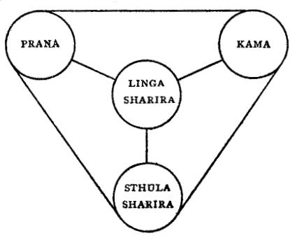

Theosophical Manual No. 1
by
Revised and corrected edition
1909
The Theosophical Publishing Society,
161 New Bond Street, W., London, England
Contents
Principle 1: The Dense Physical Body
Principle 2: The Etheric Double
Principle 5: Manas, The Thinker or Mind
Principle 6 & 7: Atma - Buddhi, The Spirit
PREFACE
Few words are needed in sending this little book out into the world. It is the
first of a series of Manuals designed to meet the public demand a simple
exposition of Theosophical teachings. Some have complained that our literature
is at once too abstruse, too technical, and too expensive for the ordinary
reader, and it is our hope that the present series may succeed in supplying what
is a very real want. Theosophy is not only for the learned; it is for all. It
may be that among those who in these little books catch their first glimpse of
its teachings, there may be a few who will be led by them to penetrate more
deeply into its philosophy, its science, and its religion, facing its abstruser
problems with the student's zeal and the neophyte's ardour. But these Manuals
are not written for the eager student whom no initial difficulties can daunt;
they are written for the busy men and women of the work-a-day world and seek to
make plain some of the great truths that render life easier to bear and death
easier to face. Written by servants of the Masters who are the Elder Brothers of
our race, they can have no other object than to serve our fellowmen.
ANNIE BESANT
Inquirers attracted to Theosophy by its central doctrine of the brotherhood of man, and by the hopes which it holds out of wider knowledge and of spiritual growth, are apt to be repelled when they make their first attempt to come into closer acquaintance with it, by the, to them, strange and puzzling names which flow glibly from the lips of Theosophists in conference assembled.They hear a tangle of Âtma-Buddhi, Kâma-Manas, Triad, Devachan, and what not, and feel at once that for them Theosophy is far too abstruse a study. Yet they might have become very good Theosophists, had not their initial enthusiasm been quenched with the douche of Sanskrit terms. In the present manual the smoking flax shall be more tenderly treated, and but few Sanskrit names shall be flung in the face of the enquirer. As a matter of fact, the use of these terms has become general among Theosophists because the English language has no equivalents for them, and a long and clumsy sentence has to be used in their stead if the idea is to be conveyed at all. The initial trouble of learning the names has been preferred to the continued trouble of using roundabout descriptive phrases – “Kâma”, for instance, being shorter and more precise than “the passional and emotional part of our nature”. [Page 2]
Man according to the Theosophical teaching is a sevenfold being, or, in the usual phrase, has a septenary constitution. Putting it in another way, man’s nature has seven aspects, may be studied from seven different points of view, is composed of seven principles. The clearest and best way of all in which to think of man is to regard him as one, the Spirit or True Self; this belongs to the highest region of the universe, and is universal, the same for all; it is a ray of God, a spark from the divine fire. This is to become an individual, reflecting the divine perfection, a son that grows into the likeness of his father. For this purpose the Spirit, or true Self, is clothed in garment after garment, each garment belonging to a definite region of the universe, and enabling the Self to come into contact with that region, gain knowledge of it, and work in it. It thus gains experience, and all its latent potentialities are gradually drawn out into active powers. These garments, or sheaths, are distinguishable from each other both theoretically and practically. If a man be looked at clairvoyantly each is distinguishable by the eye, and they are separable each from each either during physical life or at death, according to the nature of any particular sheath. Whatever words may be used, the fact remains the same – that he is essentially sevenfold, an evolving being, part of whose nature has already been manifested, part remaining latent at present, so far as the vast majority of humankind is concerned. Man’s consciousness is able to function through as many of these aspects as have been already evolved in him into activity.
This evolution, during the present cycle of human development, takes place on five out of seven planes of [Page 3 ] nature. The two higher planes – the sixth and seventh – will not be reached, save in the most exceptional cases, by men of this humanity in the present cycle, and they may therefore be left out of sight for our present purpose.As, however, some confusion has arisen as to the seven planes through differences of nomenclature, two diagrams are given at the end of this treatise showing the seven planes as they exist in our division of the universe, in correspondence with the vaster planes of the universe as a whole, and also the subdivision of the five into seven, as they are represented in some of our literature . A“plane” is merely a condition, a stage, a state; so that we might describe man as fitted by his nature, when that nature is fully developed, to exist consciously in seven different conditions, or seven different stages, in seven different states; or technically, on seven different planes of being. To take an easily verified illustration: a man may be conscious on the physical plane, that is, in his physical body, feeling hunger and thirst, and pain of a blow or cut. But let the man be a soldier in the heat of battle, and his consciousness will be centred in his passions and emotions, and he may suffer a wound without knowing it, his consciousness being away from the physical plane and acting on the plane of passions and emotions: when the excitement is over, consciousness will pass back to the physical, and he will “feel” the pain of his wound. Let the man be a philosopher, and as he ponders over some knotty problem he will lose all consciousness of bodily wants, of emotions, of love and hatred; his consciousness will have passed to the plane of intellect, he will be “abstracted”, i.e.., drawn away from considerations pertaining to his bodily life, and fixed on the plane [Page 4 ] of thought. Thus may a man live on these several planes, in these several conditions, one part or another of his nature being thrown into activity at any given time; and an understanding of what man is, of his nature, his powers, his possibilities, will be reached more easily and assimilated more usefully if he is studied along these clearly defined lines, that if he be left without analysis, a mere confused bundle of qualities and states.
It has also been found convenient, having regard to man’s mortal and immortal life, to put these seven principles into two groups – one containing the three higher principles and therefore called the Triad, the other containing the four lower, and therefore called the Quaternary. The Triad is the deathless part of man’s nature, the “spirit” and soul of Christian terminology; the Quaternary is the mortal part, the “body”, of Christianity.This division into body, soul and spirit is used by St. Paul, and is recognised in all careful Christian philosophy, although generally ignored by the mass of Christian people. In ordinary parlance soul and body make up the man, and the words soul and spirit are used interchangeably, with much confusion of thought as the result.This looseness is fatal to any clear view of the constitution of man, and the Theosophist may well appeal to the Christian philosopher as against the causal Christian non-thinker if it be urged that he is making distinctions difficult to be grasped. No philosophy worthy of the name can be stated even in the most elementary fashion without making some demand on the intelligence and the attention of the would be learner, and carefulness in the use of terms is a condition of all knowledge.[Page 5]
PRINCIPLE - 1 -
THE DENSE PHYSICAL BODY
The dense physical body of man is called the first of his seven principles, as it is certainly the most obvious. Built of material molecules, in the generally accepted sense of the term – with its five organs of sensation - the five senses - its organs of locomotion, its brain and nervous system, its apparatus for carrying on the various functions necessary for its continued existence, there is little to be said about this physical body in so slight a sketch as this of the constitution of man . Western science is almost ready to accept the Theosophical view that the human organism consists of innumerable “lives”, which build up the cells. H.P.Blavatsky says on this: “Science has never yet gone so far as to assert with the Occult doctrine that our bodies, as well as those of animals, plants, and stones, are themselves altogether built up of such beings [bacteria, etc.]: which, with the exception of the larger species, no microscope can detect ….The physical and chemical constituents of all being found to be identical, chemical science may well say that there is no difference between the matter which composes the ox and that which forms the man. But the Occult doctrine is far more explicit. It says: Not only the chemical compounds are the same, but the same infinitesimal invisible lives compose the atoms of the bodies of the mountain and the daisy, of man and the ant, of the elephant and [Page 6 ] of the tree which shelters him from the sun. Each particle – whether you call it organic or inorganic – is a life. Every atom and molecule in the universe is both life-giving and death-giving to such forms (Secret Doctrine, vol. I, p. 281, new edition). The microbes thus “build up the material body and its cells”, under the constructive energy of vitality – a phrase that will be explained when we come to deal with “life”, as the Third Principle, and with these microbes as part of it. When the “life” is no longer supplied the microbes “are left to run riot as destructive agents”, and they break up and disintegrate the cells which they built, and so the body goes to pieces.
The purely physical consciousness is the consciousness of the cells and the
molecules. The selective action of the cells, taking from the blood what they
need, rejecting what they do not need, is an instance of this self
consciousness. The process goes on without the help of our consciousness or
volition. Again that which is called by physiologists unconscious memory is the
memory of the physical consciousness, unconscious to us indeed, until we have
learned to transfer our brain consciousness there. What we feel is not what the
cells feel. The pain of a wound is felt by the brain-consciousness,
acting, as before said, on the physical plane; but the consciousness of the
molecule, as of the aggregation of molecules we call cells, leads it to hurry to
the repair of the damaged tissues – actions of which the brain is unconscious
– and its memory makes it repeat the same act again and again, even when it has
become unnecessary. Hence cicatrices on wounds, scars, callosities, etc. The
student may find many details on this subject in physiological treatises.[Page
7]
The death of the dense physical body occurs when the withdrawal of the
controlling life-energy leaves the microbes to go their own way, and the many
lives, no longer co-ordinated, separate from each other and scatter the
particles of the cells of “the man of dust”, and what we call decay sets in. The
body becomes a whirlpool of unrestrained, unregulated lives, and its form, which
resulted from their correlation, is destroyed by their exuberant individual
energy. Death is but an aspect of life, and the destruction of one material form
is but a prelude to building up of another.[Page 8]
PRINCIPLE -2-
THE ETHERIC DOUBLE
The Linga Sharira , the astral body, the ethereal body, the fluidic body, the double, the wraith, the döppelganger, the astral man – such are a few of the many names which have been given to the second principle in man’s constitution. The best name is the Etheric Double, because this term designates the second principle only, suggesting its constitution and appearance: whereas the other names have been used somewhat generally to describe bodies formed of some more subtle matter than that which affects our physical senses, without regard to the question whether other principles were or were not involved in their construction. I shall therefore use this name throughout.
The etheric double is formed of matter rarer or more subtle than that which is perceptible to our five senses, but still matter belonging to the physical plane, to which its functioning is confined. It is the state of physical matter which is just beyond our “solid , liquid and gas”, which form the dense portions of the physical plane.
This etheric double is the exact double or counterpart of the dense physical body to which it belongs, and is separable from it, although unable to go very far away therefrom. In normal healthy human beings the separation is a matter of difficulty, but in persons [Page 9] known as physical or materialising mediums, the ethereal double slips out without any great effort. When separated from the dense body it is visible to the clairvoyant as an exact replica thereof, united to it by a slender thread. So close is the physical union between the two that an injury inflicted on the etheric double appears as a lesion on the dense body, a fact known under the name of repercussion. A. d’Assier, in his well known work – translated by Colonel Olcott, the President-Founder of the Theosophical Society, under the title of Posthumous Humanity – gives a number of cases (see p. 51-57) in which this repercussion took place.
Separation of the etheric double from the dense body is generally accompanied by a considerable decrease in vitality in the latter, the double becoming more vitalised as the energy in the dense body diminishes. Colonel Olcott says (page 63):
“ When the double is projected by a trained expert, even the body seems torpid, and the mind in a ‘brown study’ or dazed state; the eyes are lifeless in expression, the heart and lung actions feeble, and often the temperature much lowered. It is very dangerous to make any sudden noise or burst into the room, under such circumstances; for the double, being by instantaneous reaction drawn back into the body, the heart convulsively contracts, and death may even be caused.”
In the case of Emilie Sagée (quoted on page 62-65) the girl was noticed to look
pale and exhausted when the double was visible: “the more distinct the double
and more material in appearance, the really material person was effectively
wearied, suffering and languid; when on the contrary, the appearance of the
[Page 10] double weakened, the patient was seen to recover
strength.”This phenomenon is perfectly intelligible to the Theosophical student,
who knows that the etheric double is the vehicle of the life-principle, or
vitality, in the physical body, and that its partial withdrawal must therefore
diminish the energy, with which this principle plays on the denser molecules.
Clairvoyants, such as the Seeress of Prevorst, state that they can see the
ethereal arm or leg attached to a body from which the dense limb has been
amputated, and D’Assier remarks on this: -
“Whilst I was absorbed in physiological studies, I was often arrested by a singular fact. It sometimes happens that a person who has lost an arm or leg experiences certain sensations at the extremities of the fingers and toes. Physiologists explain this anomaly by postulating in the patient an inversion of sensitiveness or of recollection, which makes him locate in the hand or the foot the sensation with which the nerve of the stump is alone affected …I confess that these explanations seemed to me laboured and have never satisfied me. When I studied the problem of the duplication of man, the question of amputations recurred to my mind, and I asked myself if it was not more simple and logical to attribute the anomaly of which I have spoken to the doubling of the human body, which by its fluid nature can escape amputation” (loc. Cit., p. 103-104) .
The etheric double plays a great part in spiritualistic phenomena. Here again
the clairvoyant can help us. A clairvoyant can see the etheric double oozing out
of the left side of the medium, and it is this which often appears as the
“materialised spirit,” easily moulded into various shapes by the
thought-currents of the sitters, and gaining strength and vitality as the medium
sinks into a deep trance. The Countess Wachtmeister, who is clairvoyant, says
she has seen the same [Page 11] “spirit” recognised as that of
a near relative or friend by different sitters, each of whom saw it according to
his expectations, while to her own eyes it was the mere double of the medium.So
again, H.P.Blavatsky told me that when she was at the Eddy homestead, watching
the remarkable series of phenomena there produced, she deliberately moulded the
“spirit” that appeared into the likenesses of persons known to herself and to no
one else present, and the other sitters saw the types which she produced by her
own will-power, moulding the plastic matter of the medium’s etheric double.
Many of the movements of objects that occur at such séances, and at other times,
without visible contact, are due to the action of the etheric double, and the
student can learn how to produce such phenomena at will. They are trivial
enough: the mere putting out of the etheric hand is no more important than the
putting out of the dense counterpart, and neither more or less miraculous. Some
persons produce such phenomena unconsciously, mere aimless overturnings of
objects, making of noises, and so on: they have no control over their etheric
double, and it just blunders about in their near neighbourhood, like a baby
trying to walk.For the etheric double, like the dense body, has only a diffused
consciousness belonging to its parts, and has no mentality. Nor does it readily
serve as a medium of mentality, when disjoined from the dense counterpart.
This leads to and interesting point. The centres of sensation are located in the
fourth principle, which may be said to form a bridge between the physical organs
and the mental perceptions; impressions from [Page 12] the
physical universe impinge on the material molecules of the dense physical body,
setting in vibration the constituent cells of the organs of sensations, or our
“senses”. These vibrations, in their turn, set in motion the finer material
molecules of the etheric double, in the corresponding sense organs of its finer
matter. From these vibrations pass to the astral body, or fourth principle,
presently to be considered, wherein are the corresponding centres of
sensation.From these vibrations are again propagated into the yet rarer matter
of the lower mental plane, whence they are reflected back until, reaching the
material molecules of the cerebral hemispheres, they become our “brain
consciousness”. This correlated and unconscious succession is necessary for the
normal action of consciousness as we know it. In sleep and in trance, natural or
induced, the first two and the last stages are generally omitted, and the
impressions start from and return to the astral plane, and thus make no trace on
the brain memory; but the natural or trained psychic, the clairvoyant who does
not need trance for the exercise of his powers, is able to transfer his
consciousness from the physical to the astral plane without losing grip thereof,
and can impress the brain-memory with knowledge gained on the astral plane, so
retaining it for use.
Death means for the etheric double just what it means for the dense physical
body, the breaking up of its constituent parts, the dissipation of its
molecules. The vehicle of the vitality that animates the bodily organism as a
whole, it oozes forth from the body when the death hour comes, and is seen by
the clairvoyant as a violet light, or violet form, hovering over the dying
person, still attached to the physical body by [Page 13] the
slender thread before spoken of. When the thread snaps, the last breath has
quivered outwards, and the bystanders whisper “He is dead”.
The etheric double, being of physical matter, remains in the neighbourhood of
the corpse, and is the “wraith”, or “apparition”, or “phantom”, sometimes seen
at the moment of death and afterwards by persons near the place where the death
has occurred. It disintegrates slowly pari passu with its dense
counterpart, and its remnants are seen by sensitives in cemeteries and church
yards as violet lights hovering over graves. Here is one of the reasons which
render cremation preferable to burial as a mode of disposing of the physical
enveloped of man; the fire dissipates in a few hours the molecules which would
otherwise be set free only in the slow course of gradual putrefaction, and thus
quickly restores to their own plane the dense and etheric materials, ready for
use once more in the building up of new forms. [Page 14]
PRINCIPLE -3-
PRÂNA, THE LIFE
All universes, all worlds, all men, all brutes, all vegetables, all minerals,
all molecules and atoms, all that is, are plunged in a great ocean of
life, life eternal, life infinite, life incapable of increase or diminution. The
universe is only life in manifestation, life made objective, life
differentiated. Now each organism, whether minute as a molecule or vast as a
universe, may be thought of as appropriating to itself somewhat of life, of
embodying, in itself as its own life some of this universal life . Figure a
living sponge, stretching itself out in the water which bathes it, envelops it,
permeates it; there is water, still the ocean, circulating in every passage,
filling every pore; but we may think of the ocean outside the sponge, or of part
of the ocean, appropriated by the sponge, distinguishing them in thought if we
want to make statements about each severally.So each organism is a sponge bathed
in the ocean of life universal, and containing within itself some of that ocean
as its own breath of life. In Theosophy we distinguish this appropriated life
under the name Prâna, breath, and call it the third principle in man’s
constitution.
To speak quite accurately, the “breath of life” – that which the Hebrews termed
Nephesh, or the breath of life breathed into the nostrils of Adam – is
not Prâna only, but Prâna and the fourth principle conjoined. [Page 15]
It is these two together that make the “vital spark” (Secret
Doctrine, vol. 1., page 262), and that are the “breath of life in man, as in
beast or insect, or physical, material life” (Secret Doctrine,
vol. 1., note to page 263).It is “the breath of animal life in man – the breath
of life instinctual in the animal” (Secret Doctrine, vol. 1.,
diagram page 262) . But just now we are concerned with Prâna only, with vitality
as the animating principle in all animal and human bodies. Of this life the
etheric double is the vehicle, acting, so to say, as means of communication, as
bridge, between Prâna and the dense body.
Prâna is explained in the Secret Doctrine as having for its lowest subdivision the microbes of science; these are the “invisible lives” that build up the physical cells (se ante, page 8-9); these are the “countless myriads of lives” that build the “tabernacle of clay”, the physical bodies (Secret Doctrine vol. 1, page 245). “Science, dimly perceiving the truth, may find bacteria and other infinitesimals in the human body, and see in them only, occasional and abnormal visitors to which diseases are attributed . Occultism – which discerns a life in every atom and molecule, whether in a mineral or human body, in air, fire, or water – affirms that our whole body is built of such lives; the smallest bacterium under the microscope being to them a comparative size like an elephant to the tiniest infusoria” (ibid., p. 245). The “fiery lives” are the controllers and directors of these microbes, these invisible lives, and “indirectly” build, i.e., build by controlling and directing the microbes, the immediate builders, supplying the latter with what is necessary, acting as the life of these lives; the “fiery lives” the synthesis, the essence, of Prâna, are the “vital constructive energy” that enables the [Page 16] microbes to build the physical cells. One of the archaic commentaries sums up the matter in stately and luminous phrases: “The worlds, to the profane, are built up of the known elements. To the conception of an Arhat, these elements are themselves collectively a divine life; distributively, on the plane of manifestations, the numberless and countless crores – ( a crore is ten millions) – of lives. Fire alone is ONE, on the plane of the One Reality; on that of manifested, hence illusive, being, its particles are fiery lives which live and have their being at the expense of every other life that they consume. Therefore they are named the Devourers….Every visible thing in this universe was built by such lives, from conscious and divine primordial man, down to the unconscious agents that construct matter…..From the One Life, formless and uncreate, proceeds the universe of lives (Secret Doctrine, Vol. I, page 269). As in the universe, so in man, and all these countless lives, all this constructive vitality, all this is summed up by the Theosophist as Prâna .[Page 17]
PRINCIPLE -4-
THE DESIRE BODY
In building up our man we have now reached the principle sometimes described as the animal soul, in Theosophical parlance Kâma Rûpa, or the desire-body. It belongs to in constitution, and functions on, the second or astral plane. It includes the whole body of appetites, passions, emotions, and desires which come under the head of instincts, sensations, feelings and emotions, in our Western psychological classification, and are dealt with as a subdivision of mind. In Western psychology mind is divided – by the modern school – into three main groups, feelings, will, intellect. Feelings are again divided into sensations and emotions , and these are divided and subdivided under numerous heads. Kâma, or desire, includes the whole group of “feelings”, and might be described as our passional and emotional nature. All animal needs, such as hunger, thirst, sexual desire, come under it; all passions, such as love (in its lower sense), hatred, envy, jealousy. It is the desire for sentient experience, for experience of material joys – “the lust of the flesh, the lust of the eyes, the pride of life”. This principle is the most material in our nature, it is the one that binds us fast to earthly life. “It is not molecularly constituted matter, least of all the human body, Sthula Sharîra, that is the grossest of all our ‘principles’ but verily the middle principle, the real animal centre; whereas our body is [Page 18] but its shell, the irresponsible factor and medium through which the beast in us acts all its life” ( Secret Doctrine, vol. I, p. 280-81).
United to the lower part of Manas, the mind, as Kâma-Manas, it becomes the normal human brain-intelligence, and that aspect of it will be dealt with presently. Considered by itself, it remains the brute in us, the “ape and tiger” of Tennyson, the force which most avails to keep us bound to earth and to stifle in us all higher longings by the illusions of sense.
Kâma joined to Prâna is, as we have seen, the “breath of life,” the vital sentient principle spread over every particle of the body. It is, therefore, the seat of sensation, that which enables the organs of sensation to function. We have already noted that the physical organs of sense, the bodily instruments that come into immediate contact with the external world, are related to the organs of sensation in the etheric double (ante p. 14). But these organs would be incapable of functioning did not Prâna make them vibrant with activity, and their vibrations would remain vibrations only, motion on the material plane of the physical body, did not Kâma, the principle of sensation translate the vibration into feeling. Feeling indeed, is consciousness on the kâmic plane, and when a man is under the dominion of a sensation or a passion, the Theosophist speaks of him as on the kâmic plane, meaning thereby that his consciousness is functioning on that plane.For instance, a tree may reflect rays of light, that is, ethereal vibrations, and these vibrations striking on the outer eye will set up vibrations in the physical nerve-cells; these will be propagated as vibrations to the physical and on to the astral centres, but [Page 19] there is no sight of the tree until the seat of the sensation is reached, and Kâma enables us to perceive.
Matter of the astral plane – including that called elemental essence – is the material of which the desire-body is composed, and it is the peculiar properties of this matter which enable it to serve as the sheath in which the Self can gain experience of sensation. (The constitution of the elemental essence would lead us too far from an elementary treatise). The desire–body, or astral body, as it is often called, has the form of a mere cloudy mass during the earlier stages of evolution, and is incapable of serving as an independent vehicle of consciousness. During deep sleep it escapes from the physical body, but remains near it, and the mind within it is almost as much asleep as the body. It is, however, liable to be affected by forces of the astral plane akin to its own constitution, and gives rise to dreams of a sensuous kind.In a man of average intellectual development the desire-body has become more highly organised, and when separated from the physical body is seen to resemble it is outline and features; even then, however, it is not conscious of its surroundings on the astral plane, but encloses the mind as a shell, within which the mind may actively function, while not yet able to use it as an independent vehicle of consciousness. Only in the highly evolved man does the desire-body become thoroughly organised and vitalised, as much the vehicle of consciousness on the astral plane as the physical body is on the physical plane.
After death, the higher part of man dwells for awhile in the desire-body, the length of its stay depending on the comparative grossness or delicacy of its constituents. When the man escapes from it, it persists for a time as [Page 20] a “shell” and when the departed entity is of a low type, and during earth life infused such mentality as it possessed into the passional nature, some of this remains entangled with the shell. It then possesses consciousness of a very low order, has brute cunning, is without conscience – an altogether objectionable entity, often spoken of as a “spook.” It strays about, attracted to all places in which animal desires are encouraged and satisfied, and is drawn into the currents of those whose animal passions are strong and unbridled. Mediums of low type inevitably attract these eminently undesirable visitors, whose fading vitality is reinforced in their séance rooms, who catch astral reflections, and play the part of “disembodied spirits” of a low order. Nor is this all; if at such a séance there be present some man or woman of correspondingly low development, the spook will be attracted to that person, and may attach itself to him or to her, and thus may be set up currents between the desire-body of the living person and the dying desire-body of the dead person, generating results of the most deplorable kind.
The longer or shorter persistence of the desire-body as a shell or a spook depends on the greater or less development of the animal and passional nature in the dying personality. If during earth-life the animal nature was indulged and allowed to run riot, if the intellectual and spiritual parts of man were neglected or stifled, then, as the life-currents were set strongly in the direction of passion, the desire-body will persist for a long period after the body of the person is dead. Or again, if earth-life has been suddenly cut short by accident or by suicide, the link between Kâma and Prâna will not be easily broken, and the desire-body [Page 21] will be strongly vivified. If, on the other hand, desire has been conquered and bridled during earth-life, if it has been purified and trained into subservience to man’s higher nature, then there is but little to energise the desire-body and it will quickly disintegrate and dissolve away.
There remains one other fate, terrible in its possibilities, which may befall the fourth principle, but it cannot be clearly understood until the fifth principle has been dealt with.[Page 22]
THE QUATERNARY, OR FOUR LOWER PRINCIPLES
Diagram of the Quaternary; transitory and mortal; see Secret Doctrine, Volume I, page 262 [The etheric double is here named the Linga Sharira, a name now discarded in consequence of the confusion caused by employing a well-known term in Hindu philosophy in an entirely new sense. Before her departure H.P.B. urged her pupils to reform the terminology, which had been too carelessly put together, and we are trying to carry out her wish.]

“The Breath needed a form; the Fathers gave it. The Breath needed a gross body;
the Earth moulded it; The Breath needed the Spirit of Life; the Solar Lhas
breathed into it its form. The Breath needed a Mirror of its Body; ‘We gave it
our own’, said the Dhyânis. The Breath needed a Vehicle of Desires; ‘It has it’,
said the Drainer of Waters. But Breath needs a Mind to embrace the Universe;
‘We [Page 24] cannot give that, ‘said the fathers, ‘I never had
it ,‘ said the Spirit of the Earth. ‘The form would be consumed were I to give
it mine,’ said the Great Fire ….Man remained an empty senseless Bhûta”
(phantom).
And so is the personal man without mind. The quaternary alone is not man, the
Thinker, and it is as Thinker that man is really man.
Yet at this point let the student pause, and reflect over the human
constitution, so far as he has gone. For this quaternary is the mortal part of
man, and is distinguished by Theosophy as the personality. It needs to be
very clearly and definitely realised, if the constitution of man is to be
understood, and if the student is to read more advanced treatises with
intelligence. True, to make the personality human it has yet to come
under the rays of mind, and to be illuminated by it as the world by the rays of
the sun. But even without these rays it is a clearly defined entity, with its
dense body, its etheric double, its life, and its desire body or animal soul. It
has passions, but no reason; it has emotions, but no intellect; it has desires,
but no rationalised will; it awaits the coming of its monarch, the mind, the
touch which shall transform it into man.[Page 25]
PRINCIPLE -5-
MANAS, THE THINKER, OR MIND
We have reached the most complicated part of our study, and some thought and attention are necessary from the reader to gain even an elementary idea of the relation held by the fifth principle to the other principles in man.
The word Manas comes from the Sanskrit word man, the root of the verb to think; it is the Thinker in us, spoken of vaguely in the West as mind. I will ask the reader to regard Manas as Thinker rather than as mind, because the word Thinker suggests some one who thinks, i.e., an individual, an entity. And this is exactly the Theosophical idea of Manas, for Manas is the immortal individual, the real “ I”, that clothes itself over and over again in transient personalities, and itself endures for ever. It is described in the Voice of the Silence in the exhortation addressed to the candidate for initiation: “Have perseverance as one who doth for evermore endure. Thy shadows [personalities] live and vanish; that which in thee shall live for ever, that which in thee knows, for it is knowledge, is not of fleeting life; it is the man that was, that is, and will be, for whom the hour shall never strike” (p. 31). H.P.Blavatsky has described it very clearly in the Key to Theosophy: “Try to imagine a ‘Spirit’, a celestial being, whether we call it by one name or another, divine in its essential nature, yet not pure enough to be one [Page 26] with the ALL, and having, in order to achieve this, to so purify its nature as finally to gain that goal. It can do so only be passing individually and personally, i.e., spiritually and physically, through every experience and feeling that exists in the manifold or differentiated universe. It has, therefore, after having gained such experience in the lower kingdoms, and having ascended higher and still higher with every rung on the ladder of being, to pass through every experience on the human planes. In its very essence it is Thought, and is, therefore, called in its plurality Manasaputra, ‘the Sons of (universal) Mind.’ This individualised ‘Thought’ is what we Theosophists call the real human Ego, the thinking entity imprisoned in a case of flesh and bones. This is surely a spiritual entity, not matter [that is, not matter as we know it, on the plane of the objective universe] – and such entities are the incarnating Egos that inform the bundle of animal matter called mankind, and whose names are Manasa or minds” (Key to Theosophy, p. 183-184).
This idea may be rendered yet clearer perhaps by a hurried glance cast backward over man’s evolution in the past. When the quaternary had been slowly built up, it was a fair house without a tenant, and stood empty awaiting the coming of the one who was to dwell therein.The name Mânasaputra (the sons of mind) covers many grades of intelligence, ranging from the mighty “Sons of the Flame” whose human evolution lies far behind them, down to those entities who gained individualisation in the cycle preceding our own, and were ready to incarnate on this earth in order to accomplish their human stage of evolution. Some superhuman [Page 27] intelligences incarnated as guides and teachers of our infant humanity, and became founders and divine rulers of the ancient civilisations. Large numbers of the entities spoken of above, who had already evolved some mental faculties, took up their abode in the human quaternary, in the mindless men. These are the reincarnating Mânasaputra, who became the tenants of the human frames as then evolved on earth, and these same Mânasaputra, reincarnating age after age, are the Reincarnating Egos, the Manas in us, the persistent individual, the fifth principle in man.The remainder of mankind through successive ages received from the loftier Mânasaputra their first spark of mind, a ray which stimulated into growth the germ of mind latent within them, the human soul thus having its birth in time there. It is these differences of age, as we may call them, in the beginning of the individual life, of the specialisation of the eternal Divine Spirit into a human soul, which explain the enormous differences in mental capacity found in our present humanity.
The multiplicity of names given to this fifth principle has probably tended to increase the confusion surrounding it in the minds of many who are beginning to study Theosophy. Mânasaputra is what we call the historical name, the name that suggests the entrance into humanity of a class of already individualised souls at a certain point of evolution; Manas is the ordinary name, descriptive of the intellectual nature of the principle; the Individual or the “ I ”, or Ego, recalls the fact that this principle is permanent, does not die, is the individualising principle, separating itself in thought from all that is not itself, the Subject in Western terminology as opposed to the Object; the Higher Ego puts it into contrast with the Personal Ego, of which [Page 28] something is to be presently said .The Reincarnating Ego lays stress on the fact that it is the principle that reincarnates continually, and so unites in its own experience all the lives passed through on earth. There are various other names, but they will not be met with in elementary treatises.The above are those most often encountered, and there is no real difficulty about them, but when they are used interchangeably, without explanation, the unhappy student is apt to tear his hair in anguish, wondering how many principles he has got hold of, and what relation they bear to each other.
We must now consider Manas during a single incarnation, which will serve as the type of all, and we will start when the Ego has been drawn – by causes set a-going in previous earth-lives – to the family in which is to be born the human being who is to serve as its next tabernacle. (I do not deal here with reincarnation, since that great and most essential doctrine of Theosophy must be expounded separately). The Thinker, then, awaits the building of the “house of life” which he is to occupy; and now arises a difficulty; himself a spiritual entity living on the mental or third plane upwards, a plane far higher than that of the physical universe, he cannot influence the molecules of gross matter of which his dwelling is built by the direct play upon them of his own most subtle particles.So, he projects part of his own substance, which clothes itself with astral matter, and then with the help of etheric matter permeates the whole nervous system of the yet unborn child, to form, as the physical apparatus matures, the thinking principle in man. This projection from Manas, spoken of as its reflection, its shadow, its ray, and by many another descriptive and allegorical [Page 29] name, is the lower Manas, in contradistinction to the higher Manas – Manas, during every period of incarnation, being dual.On this, H.P.Blavatsky says: “Once imprisoned, or incarnate, their (the Manas) essence becomes dual; that is to say the rays of the eternal divine Mind, considered as individual entities, assume a twofold attribute which is (a) their essential, inherent, characteristic, heaven-aspiring mind (higher Manas), and (b) the human quality of thinking, or animal cogitation, rationalised owing to the superiority of the human brain, the Kâma-tending or lower Manas” (Key to Theosophy, p. 184).
We must now turn our attention to this lower Manas alone, and see the part which it plays in the human constitution.
It is engulfed in the quaternary, and we may regard it as clasping Kâma with one hand, while with the other it retains its hold on its father, the higher Manas. Whether it will be dragged down by Kâma altogether and be torn away from the triad to which by its nature it belongs, or whether it will triumphantly carry back to its source the purified experiences of its earth-life – that is the life-problem set and solved in each successive incarnation. During earth-life, Kâma and the lower Manas are joined together, and are often spoken of conveniently as Kâma-Manas. Kâma supplies, as we have seen, the animal and passional elements; the lower Manas rationalises these, and adds the intellectual faculties; and so we have the brain-mind, the brain-intelligence, i.e., Kâma-Manas functioning in the brain and nervous system, using the physical apparatus as its organ on the material plane.In man these two principles are interwoven during life, and rarely act separately, [Page 30] but the student must realise that “Kâma-Manas“ is not a new principle, but the interweaving of the fourth with the lower part of the fifth.
As with a flame we may light a wick, and the colour of the flame of the burning wick will depend on the nature of the wick and of the liquid in which it is soaked, so in each human being the flame of Manas set alight the brain and Kâmic wick, and the colour of the light from that wick will depend on the Kâmic nature and the development of the brain-apparatus.If the Kâmic nature be strong and undisciplined it will soil the pure manasic light, lending it a lurid tinge and fouling it with noisome smoke. If the brain-apparatus be imperfect or undeveloped, it will dull the light and prevent it from shining forth to the outer world. As was clearly stated by H.P.Blavatsky in her article on “Genius”; “What we call ‘the manifestations of genius’ in a person are only the more or less successful efforts of that Ego to assert itself on the outward plane of its objective form – the man of clay – in the matter-of-fact daily life of the latter. The Egos of a Newton, an Aeschylus, or a Shakespeare are of the same essence and substance as the Egos of a yokel, an ignoramus, a fool, or even an idiot; and the self-assertion of their informing genii depends on the physiological and material construction of the physical man. No Ego differs from another Ego in its primordial or original essence and nature. That which makes of one mortal a great man and of another a vulgar silly person is, as said, the quality and make-up of the physical shell or casing, and the adequacy or inadequacy of brain and body to transmit and give expression to the light of the real inner man; and this aptness or inaptness is, in its [Page 31] turn, the result of Karma.Or, to use another simile, physical man is the musical instrument, and the Ego the performing artist. The potentiality of perfect melody of sound is in the former – the instrument – and no skill of the latter can awaken a faultless harmony out of a broken or badly made instrument. This harmony depends on the fidelity of transmission, by word and act, to the objective plane, of the unspoken divine thought in the very depths of man’s subjective or inner nature. Physical man may – to follow our simile – be a priceless Stradivarius, or a cheap and cracked fiddle, or again a mediocrity between the two, in the hands of the Paganini who ensouls him” (Lucifer November, 1889, p.228).
Bearing in mind these limitations and idiosyncrasies [Limitations and idiosyncrasies due to the action of the Ego in previous earth-lives, be it remembered ] imposed on the manifestations of the thinking principle by the organ through which it has to function, we shall have little difficulty in following the workings of the lower Manas in man; mental ability, intellectual strength, acuteness, subtlety – all these are its manifestations; these may reach as far as what is often called genius, what H.P. Blavatsky speaks of as “artificial genius, the outcome of culture and of purely intellectual acuteness”. Its nature is often demonstrated by the presence of Kâmic elements in it, of passion, vanity and arrogance.
The higher Manas can but rarely manifest itself at the present stage of human evolution. Occasionally a flash from those loftier regions lightens the twilight in which we dwell, and such flashes alone are what the Theosophist calls true genius; “Behold in every [Page 32] manifestation of genius, when combined with virtue, the undeniable presence of the celestial exile, the divine Ego whose jailer thou art, O man of matter.”For theosophy teaches “that the presence in man of various creative powers” – called genius in their collectivity – is due to no blind chance, to no innate qualities through hereditary tendencies – though that which is known as atavism may often intensify these faculties – but to an accumulation of individual antecedent experiences of the Ego in its preceding life and lives.For, omniscient in its essence and nature, it still requires experience, through its personalities, of the things of earth, earthly on the objective plane, in order to apply the fruition of that abstract experience to them. And, adds our philosophy, the cultivation of certain aptitudes through out a long series of past incarnations must finally culminate, in some one life, in a blooming forth as genius, in one or another direction” – ( Lucifer November, 1889, p. 229-30). For the manifestation of true genius, purity of life is an essential condition.
Kâma-Manas is the personal self of man; we have already seen that the quaternary, as a whole, is the personality, “the shadow”. and the lower Manas gives the individualising touch that makes the personality recognise itself as “ I “. It becomes intellectual, it recognises itself as separate from all other selves; deluded by the separateness it feels, it does not realise a unity beyond all that it is able to sense. And the lower Manas, attracted by the vividness of the material-life impressions, swayed by the rush of the Kâmic emotions, passions and desires, attracted to all material things blinded and deafened by the storm voices among which it is plunged – the lower Manas is apt to forget [Page 33] the pure and serene glory of its birthplace, and to throw itself into the turbulence which gives rapture in lieu of peace. And, be it remembered, it is this very lower Manas that yields the last touch of delight to the senses and to the animal nature; for what is passion that can neither anticipate nor remember, where is ecstasy without the subtle force of imagination, the delicate colours of fancy and of dream?
But there may be chains yet more strong and constraining, binding the lower Manas fast to the earth. They are forged of ambition, of desire for fame, be it for that of the statesman’s power, or of supreme intellectual achievement. So long as any work is wrought for sake of love, or praise, or even recognition that the work is “mine” and not another’s; so long as in the heart’s remotest chambers one subtlest yearning remains to be recognised as separate from all; so long, however grand the ambition, however far reaching the charity, however lofty the achievement, Manas is tainted with Kâma, and is not pure as its source.
MANAS IN ACTIVITY
We have already seen that the fifth principle is dual in its aspect during each period of earth-life, and that the lower Manas united to Kâma, spoken of conveniently as Kâma-Manas, functions in the brain and nervous system of man. We need to carry our investigation a little further in order to distinguish clearly between the activity of the higher and of the lower Manas, so that the working in the mind of man may become less obscure to us that it is at present to many. [Page 34]
Now the cells of the brain and nervous system (like all other cells) are composed of minute particles of matter, called molecules (literally, little heaps). These molecules do not touch each other, but are held grouped together by that manifestation of the Eternal Life which we call attraction. Not being in contact with each other they are able to vibrate to and fro if set in motion, and, as a matter of fact, they are in a state of continual vibration . H.P.Blavatsky points out (Lucifer, October, 1890, p. 92-93) that molecular motion is the lowest and most material form of the One Eternal Life. Itself motion as the “Great Breath”, and the source of all motion on every plane of the universe. In the Sanskrit, the roots of the terms for spirit, breath, being and motion are essentially the same, and Râma Prâsad says that “all these roots have for their origin the sound produced by the breath of animals” – the sound of expiration and inspiration.
Now, the lower mind, or Kâma-Manas, acts on the molecules of the nervous cells by motion, and set them vibrating, so starting mind-consciousness on the physical plane. Manas itself could not affect these molecules ; but its ray, the lower Manas, having clothed itself in astral matter and united itself to the kâmic elements, is able to set the physical molecules in motion, and so give rise to “brain consciousness,” including the brain memory and all other functions of the human mind, as we know it in its ordinary activity. These manifestations, “like all other phenomena on the material plane ... must be related in their final analysis to the world of vibration,” says H.P.Blavatsky. But, she goes on to point out , “in their origin they belong to a different and higher world of harmony”. Their [Page 35] origin is in the manasic essence, in the ray; but on the material plane, acting on the molecules of the brain, they are translated into vibrations.
This action of the Kâma-Manas is spoken of by Theosophists as psychic. All mental and passional activities are due to this psychic energy, and its manifestations are necessarily conditioned by the physical apparatus through which it acts. We have already seen this broadly stated ( ante, p. 29-30), and the rationale of the statement will now be apparent.If the molecular constitution of the brain be fine, and if the working of the specifically kâmic organs (liver, spleen, etc.) be healthy and pure – so as not to injure the molecular constitution of the nerves which put them into communication with the brain – then the psychic breath, as it sweeps through the instrument, awakens in this true Aeolian harp harmonious and exquisite melodies; whereas if the molecular constitution be gross or poor, if it be disordered by the emanations of alcohol, if the blood be poisoned by gross living or sexual excesses, the strings of the Aeolian harp become too loose or too tense, clogged with dirt or frayed with harsh usage, and when the psychic breath passes over them they remain dumb or give out harsh discordant notes, not because the breath is absent, but because the strings are in evil case.
It will now, I think, be clearly understood that what we call mind, or intellect, is in H.P.Blavatsky’s words, “a pale and too often distorted reflection” of Manas itself, or our fifth principle; Kâma-Manas is “the rational, but earthly or physical intellect of man, incased in, and bound by, matter, therefore subject to the influence of the latter”; it is the “lower self, or that [Page 36] which manifesting through our organic system, acting on this plane of illusion, imagines itself the Ego sum, and thus falls into what Buddhist philosophy brands as the ‘heresy of separateness.’ It is the human personality, from which proceeds “the psychic, i.e., ‘terrestrial wisdom’ at best, as it is influenced by all the chaotic stimuli of the human or rather animal passions of the living body” (Lucifer, October, 1890, p.179).
A clear understanding of the fact that Kâma-Manas belongs to the human personality, that it functions in and through the physical brain, that it acts on the molecules of the brain, setting them into vibration, will very much facilitate the comprehension by the student of the doctrine of reincarnation.That great subject will be dealt with in another volume of this series, and I do not propose to dwell upon it here, more than to remind the student to take careful note of the fact that the lower Manas is a ray from the immortal Thinker, illuminating a personality, and that all the functions which are brought into activity in the brain-consciousness are functions correlated to the particular brain, to the particular personality, in which they occur.The brain-molecules that are set vibrating are material organs in the man of flesh; they did not exist as brain molecules before his conception, nor do they persist as brain molecules after his disintegration. Their functional activity is limited by the limits of his personal life, the life of the body, the life of the transient personality.
Now the faulty of which we speak as memory on the physical plane depends on the response of these very brain-molecules to the impulse of the lower Manas, and there is no link between the brains of successive personalities except through the higher Manas, that sends [Page 37] out its ray to inform and enlighten them successively. It follows, then, inevitably, that unless the consciousness of man can rise from the physical and Kâma-manasic planes to the plane of the higher Manas, no memory of one personality can reach over to another. The memory of the personality belongs to the transitory part of man’s complex nature, and those only can recover the memory of their past lives who can raise their consciousness to the plane of the immortal Thinker, and can, so to speak, travel in consciousness up and down the ray which is the bridge between the personal man that perishes and the immortal man that endures. If, while we are cased in the human flesh, we can raise our consciousness along the ray that connects our lower with our true Self, and so reach the higher Manas, we find there stored in the memory of that eternal Ego the whole of our past lives on earth, and we can bring back those records to our brain-memory by way of that same ray, through which we can climb upwards to our “Father”. But this is an achievement that belongs to a late stage of human evolution, and until this is reached the successive personalities informed by the manasic rays are separated from each other, and no memory bridges over the gulf between. The fact is obvious enough to any one who thinks the matter out, but as the difference between the personality and the immortal individuality is somewhat unfamiliar in the West, it may be well to remove a possible stumbling-block from the student’s path.
Now the lower Manas may do one of three things; It may rise towards its source, and by unremitting and strenuous efforts become one with its “Father in heaven,” or the higher Manas – Manas uncontaminated with [Page 38] earthly elements, unsoiled and pure. Or it may partially aspire and partially tend downwards, as indeed is mostly the case with the average man. Or saddest fate of all, it may become so clogged with the kâmic elements as to become one with them, and be finally wrenched away from its parent and perish.
Before considering these three fates, there are a few more words to be said touching the activity of the lower Manas.
As the lower Manas frees itself from Kâma, it becomes the sovereign of the lower part of man, and manifests more and more of its true and essential nature. In Kâma is desire, moved by bodily needs, and Will, which is the outgoing energy of the Self in Manas, is often led captive by the turbulent physical impulses. But the lower Manas, “whenever it disconnects itself, for the time being, from Kâma, becomes the guide of the highest mental faculties, and is the organ of the free will in physical man” (Lucifer, October 1890, page 94). But the condition of this freedom is that Kâma shall be subdued, shall lie prostrate beneath the feet of the conqueror; if the maiden Will is to be set free, the manasic St. George must slay the kâmic dragon that holds her captive ; for while Kâma is unconquered, Desire will be master of the Will.
Again, as the lower Manas frees itself from Kâma, it becomes more and more capable of transmitting to the human personality with which it is connected the impulses that reach it from its source. It is then, as we have seen, that genius flashes forth, the light from the higher Ego streaming through the lower Manas to the brain, and manifesting itself to the world. So also, as H.P.Blavatsky points out, such action may raise a [Page 39] man above the normal level of human power. “The higher Ego”, she says, “cannot act directly on the body, as its consciousness belongs to quite another plane and planes of ideation; the lower self does; and its action and behaviour depend on its freewill and choice as to whether it will gravitate more towards its parent (‘the Father in heaven’) or the ‘animal’ which it informs, the man of flesh. The higher Ego, as part of the essence of the Universal Mind, is unconditionally omniscient on its own plane, and only potentially so in our terrestrial sphere, as it has to act solely through its alter ego the personal self. Now …the former is the vehicle of all knowledge of the past, the present and the future, and …it is from this fountain head that its ‘double’ catches occasional glimpses of that which is beyond the senses of man, and transmits them to certain brain-cells (unknown to science in their functions), thus making of man a seer, a soothsayer and a prophet” (Lucifer, November, 1890, p. 179).This is the real seership, and on it a few words must be said presently. It is, naturally, extremely rare, and precious as it is rare. A “faint and distorted reflection” of it is found in what is called mediumship, and of this H.P.Blavatsky says: “Now what is a medium? The term medium, when not applied to things and objects, is supposed to be a person through whom the action of another person or being is either manifested or transmitted . Spiritualists believing in communications with disembodied spirits, and that these can manifest through, or impress sensitives to transmit messages from them, regard mediumship as a blessing and a great privilege. We Theosophists, on the other hand, who do not believe in the ‘communion of spirits’, as Spiritualists do, regard [Page 40] the gift as one of the most dangerous of abnormal nervous diseases. A medium is simply one in whose personal Ego, or terrestrial mind, the percentage of the astral light so preponderates as to impregnate with it his whole physical constitution. Every organ and cell thereby is attuned, so to speak, and subject to an enormous and abnormal tension” (Lucifer, November 1890, page 183).
To return to the three fates spoken of above, any one of which may befall the
lower Manas.
It may rise towards its source and become one with the Father in heaven.
This triumph can only be gained by many successive incarnations, all consciously
directed towards this end. As life succeeds life, the physical frame becomes
more and more delicately attuned to vibrations responsive to the manasic
impulses, so that gradually the manasic ray needs less and less of the coarser
astral matter as its vehicle.“It is part of the mission of the manasic ray to
get gradually rid of the blind deceptive element which, though it makes of it an
actual spiritual entity on this plane, still brings it into so close contact
with matter as to entirely becloud its divine nature and stultify its
intuitions” (Lucifer, November, 1890, p. 182). Life after life it rids
itself of this “blind deceptive element”, until at least, master of Kâma, and
with body responsive to mind, the ray becomes one with its radiant source, the
lower nature is wholly attuned to the higher, and the Adept stands forth
complete, the “Father and the Son”, having become one on all planes, as they
have been always “one in heaven”. For him the wheel of incarnation is over, the
cycle of necessity is trodden. Henceforth he can incarnate at will, to do any
special service to [Page 41] mankind; or he can dwell in the
planes round the earth without the physical body, helping in the further
evolution of the globe and of the race.
It may partially aspire and partially tend downwards. This is the normal experience of the average man. All life is a battlefield, and the battle rages in the lower manasic region, where Manas wrestles with Kâma for empire over man. Anon aspiration conquers, the chains of sense are broken, and the lower Manas, with the radiance of its birthplace on it, soars upwards on strong wings, spurning the soil of earth.But alas! too soon the pinions tire, they flag, they flutter, they cease to beat the air; and downwards falls the royal bird whose true realm is that of the higher air, and he flutters heavily to the bog of earth once more, and Kâma chains him down.
When the period of incarnation is over, and the gateway of death closes the road of earthly life, what becomes of the lower Manas in the case we are considering?
Soon after the death of the physical body, Kâma-Manas is set free, and dwells for a while on the astral plane clothed with a body of astral matter. From this all of the manasic ray that is pure and unsoiled gradually disentangles itself, and, after a lengthy period spent on the lower levels of Devachan, it returns to its source, carrying with it such of its life-experiences as are of a nature fit for assimilation with the Higher Ego. Manas thus again becomes one during the latter part of the period which intervenes between two incarnations. The manasic Ego, brooded over by Âtma-Buddhi – the two highest principles in the human constitution, not yet considered by us – passes into the devachanic [Page 42] state of consciousness, resting from the weariness of the life-struggle through which it has passed. The experiences of the earth-life just closed are carried into the manasic consciousness by the lower ray withdrawn into its source. They make the devachanic state a continuation of earth-life, shorn of its sorrows, a completion of the wishes and desires of earth-life, so far as those were pure and noble. The poetic phrase that “the mind creates its own heaven” is truer than many may have imagined, for everywhere man is what he thinks, and in the devachanic state the mind is unfettered by the gross physical matter through which it works on the objective plane.The devachanic period is the time for the assimilation of life experiences, the regaining of equilibrium, ere a new journey is commenced. It is the day that succeeds the night of earth-life, the alternative of the objective manifestation. Periodicity is here, as everywhere else in nature, ebb and flow, throb and rest, the rhythm of the Universal Life. This devachanic state of consciousness lasts for a period of varying length, proportioned to the stage reached in evolution, the Devachan of the average man being said to extend over some fifteen-hundred years.
Meanwhile, that portion of the impure garment of the lower Manas which remains entangled with Kâma gives to the desire-body a somewhat confused consciousness, a broken memory of the events of the life just closed. If the emotions and passions were strong and the manasic element weak during the period of incarnation, the desire-body will be strongly energised, and will persist in its activity for a considerable length of time after the death of the physical body. It will also show a considerable amount of consciousness, as much of the [Page 43] manasic ray will have been overpowered by the vigorous kâmic elements, and will have remained entangled in them. If, on the other hand, the earth-life just closed was characterised my mentality and purity rather than by passion, the desire-body, being but poorly energised, will be a pale simulacrum of the person to whom it belonged, and will fade away, disintegrate and perish before any long period has elapsed.
The “spook” already mentioned (ante, p. 20-21) will now be understood. It may show very considerable intelligence, if the manasic element be still largely present, and this will be the case with the desire-body of persons of strong animal nature and forcible though coarse intellect.For intelligence working in a very powerful kâmic personality will be exceedingly strong and energetic, though not subtle or delicate, and the spook of such a person, still further vitalised by the magnetic currents of persons yet living in the body, may show much intellectual ability of a low type.But such a spook is conscienceless, devoid of good impulses, tending towards disintegration, and communications with it can work for evil only, whether we regard them as prolonging its vitality by the currents which it sucks up from the bodies and kâmic elements of the living, or as exhausting the vitality of these living persons and polluting them with astral connections of an altogether undesirable kind.
Nor should it be forgotten that, without attending séance-rooms at all, living persons may come into objectionable contact with these kâmic spooks. As already mentioned, they are attracted to places in which the animal part of man is chiefly catered for; drinking houses, gambling saloons, brothels – all these places are [Page 44] full of the vilest magnetism, are very whirlpools of magnetic currents of the foulest type. These attract the spooks magnetically, and they drift to such psychic maelstroms of all that is earthly and sensual. Vivified by currents so congenial to their own, the desire-bodies become more active and potent; impregnated with the emanations of passions and desires which they can no longer physically satisfy, their magnetic current reinforce the similar currents in the live persons, action and reaction continually going on, and the animal natures of the living become more potent and less controlled by the will as they are played on by these forces of the kâmic world. Kâma-loka (from loka, a place, and so the place for Kâma) is a name often used to designate that plane of the astral world to which these spooks belong, and from this ray forth magnetic currents of poisonous character, as from a pest-house float out germs of disease which may take root and grow in the congenial soil of some poorly vitalised physical body.
It is very possible that many will say, on reading these statements, that Theosophy is a revival of mediaeval superstitions and will lead to imaginary terrors. Theosophy explains mediaeval superstitions, and shows the natural facts on which they were founded and from which they drew their vitality. If there are planes in nature other than the physical, no amount of reasoning will get rid of them and belief in their existence will constantly reappear; but knowledge will give them their intelligible place in the universal order, and will prevent superstition by an accurate understanding of their nature, and of the laws under which they function.And let it be remembered that persons whose [Page 45] consciousness is normally on the physical plane can protect themselves from undesirable influences by keeping their minds clean and their wills strong. We protect ourselves best against disease by maintaining our bodies in vigorous health; we cannot guard ourselves against invisible germs, but we can prevent our bodies from becoming suitable soil for the growth and development of the germs. Nor need we deliberately throw ourselves in the way infection. So also as regards these malign germs from the astral plane. We can prevent the formation of Kâma-manasic soil in which they can germinate and develop, and we need not go into evil places, nor deliberately encourage receptivity and mediumistic tendencies. A strong active will and a pure heart are our best protection.
There remains the third possibility for Kâma-Manas, to which we must now turn
our attention, the fate spoken of earlier as “terrible in its consequences,
which may befall the kâmic principle”.
It may break away from its source made one with Kâma instead of with the higher
Manas. This is fortunately, a rare event, as rare at one pole of human life
as the complete re-union with the higher Manas is rare at the other. But still
the possibility remains and must be stated.
The personality may be so strongly controlled by Kâma that, in the struggle between the kâmic and manasic elements, the victory may remain wholly with the former. The lower Manas may become so enslaved that its essence may be frayed and thinner and thinner by the constant rub and strain, until at last persistent yielding to the promptings of desire bears its inevitable fruit, and the slender link which unites the higher to [Page 46] the lower Manas, the “silver thread that binds it to the Master”, snaps in two.Then, during earth-life, the lower quaternary is wrenched away from the Triad to which it was linked, and the higher nature is severed wholly from the lower. The human being is rent in twain, the brute has broken itself free, and it goes forth unbridled, carrying with it the reflections of that manasic light which should have been its guide through the desert of life . A more dangerous brute it is than its fellows of the unevolved animal world, just because of these fragments in it of the higher mentality of man. Such a being, human in form but brute in nature, human in appearance but without human truth, or love or justice – such a one may now and then be met with in the haunts of men, putrescent while still living, a thing to shudder at with deepest, if hopeless compassion. What is its fate after the funeral knell has tolled?
Ultimately, there is the perishing of the personality that has thus broken away
from the principles that can alone give it immortality. But a period of
persistence lies before it.
The desire-body of such a one is an entity of terrible potency, and it has this
unique peculiarity, that it is able under certain rare circumstances to
reincarnate in the world of men.It is not a mere “spook” on the way to
disintegration; it has retained, entangled in its coils , too much of the
manasic element to permit of such natural dissipation in space. It is
sufficiently an independent entity, lurid instead of radiant, with manasic flame
rendered foul instead of purifying, as to be able to take to itself a garment of
flesh once more and dwell as man with men. Such a man – if the word
[Page 47] may indeed be applied to the mere human shell with brute
interior – passes through a period of earth-life the natural foe of all who are
still normal in their humanity. With no instincts save those of the animal,
driven only by passion, never even by emotion, with a cunning that no brute can
rival, a deliberate wickedness that plans evil in fashion unknown to the mere
frankly natural impulses of the animal world, the reincarnated entity touches
ideal vileness.Such soil the page of human history as the monsters of iniquity
that startle us now and again into a wondering cry, “Is this a human being?”
Sinking lower with each successive incarnation, the evil force gradually wears
itself out, and such a personality perishes separated from the source of life.
It finally disintegrates, to be worked up into other forms of living things, but
as a separate existence, it is lost. It is a bead broken off the thread of life,
and the immortal Ego that incarnated in that personality has lost the experience
of that incarnation, has reaped no harvest from that life-sowing. Its ray has
brought nothing back, its lifework for that birth has been a total and complete
failure, whereof nothing remains to weave into the fabric of its own eternal
Self. [Page 48]
SUBTLE FORMS OF THE FOURTH AND FIFTH PRINCIPLE
The student will already have fully realised that “an astral body” is a loose term that may cover a variety of different forms. It may be well at this stage to sum up the subtle types sometimes inaccurately called the astral that belong to the fourth and fifth principles.
During life a true astral body may be projected – formed, as its name implies, of astral matter – but, unlike the etheric double, dowered with intelligence, and able to travel to a considerable distance from the physical body to which it belongs. This is the desire-body, and it is, as we have seen, a vehicle of consciousness. It is projected by mediums and sensitives unconsciously, and by trained students consciously.It can travel with the speed of thought to a distant place, can there gather impressions from surrounding objects, can bring back those impressions to the physical body. In the case of a medium it can convey them to others by means of the physical body still entranced, but as a rule when the sensitive comes out of trance, the brain does not retain the impressions thus made upon it, and no trace is left in the memory of the experiences thus acquired. Sometimes, but this is rare, the desire-body is able sufficiently to affect the brain by the vibrations it set up, to leave a lasting impression thereon, and then the sensitive is able to recall the knowledge acquired during trance. The student learns to impress on his brain the knowledge gained in the desire-body, his will being active while that of the medium is passive.[Page 49]
This desire-body is the agent unconsciously used by clairvoyants when their
vision is not merely the seeing in the astral light. This astral form does then
really travel to distant places, and may appear there to persons who are
sensitive or who chance for the time to be in an abnormal nervous condition.
Sometimes it appears to them – when very faintly informed by consciousness – as
a vaguely outlined form, not noticing its surroundings. Such a body has appeared
near the time of death at places distant from the dying person, to those who
were closely united to the dying by ties of the blood, of affection, or of
hatred. More highly energised, it will show intelligence and emotion, as in some
cases on record, in which dying mothers have visited their children residing at
a distance, and have spoken in their last moments of what they had seen and
done. The desire-body is also set free in many cases of disease – as is the
etheric double – as well as in sleep and in trance. Inactivity of the physical
body is a condition of such astral voyagings.
The desire-body seems also occasionally to appear in séance-rooms, giving rise
to some of the more intellectual phenomena that takes place. It must not be
confounded with the “spook” already sufficiently familiar to the reader, the
latter being always the kâmic or Kâma-Manasic remains of some dead person,
whereas the body we are now dealing with is the projection of an astral double
from a living person.
A higher form of subtle body, belonging to Manas, is that known as the Mâyâvi Rûpa, or “body of illusion”. The Mâyâvi Rûpa is a subtle body formed by the consciously directed will of the Adept or disciple; it may, or may not, resemble the physical body, the form given [Page 50] to it being suitable to the purpose for which it is projected. In this body the full consciousness dwells, for it is merely the mental body rearranged. The Adept or disciple can thus travel at will, without the burden of the physical body, in the full exercise of every faculty, in perfect self-consciousness. He makes the Mâyâvi Rûpa visible of invisible at will – on the physical plane – and the phrase often used by chelâs and others as to seeing an Adept “in his astral”, means that he was visited by them in his Mâyâvi Rûpa. If he so chose, he can make it, indistinguishable from a physical body, warm and firm to the touch as well as visible, able to carry on a conversation, at all points like a physical human being. But the power thus to form the true Mâyâvi Rûpa is confined to Adepts and chelâs; it cannot be done by the untrained student, however psychic he may naturally be, for it is a manasic and not a psychic creation, and it is only under the instruction of his Guru that the chelâ learns to form and use the “body of illusion”.
THE HIGHER MANAS
The immortal Thinker itself, as will by this time have become clear to the reader, can manifest itself but little on the physical plane at the present stage of human evolution. Yet we are able to catch some glimpses of the powers resident in it, the more as in the lower Manas we find those powers “cribbed, cabined and confined” indeed, but yet existing. Thus we have seen (p. 37) that the lower Manas “is the organ of the freewill in physical man”. Freewill resides in Manas itself, [Page 51] in Manas the representative of Mahat, the Universal Mind. From Manas comes the feeling of liberty, the knowledge that we can rule ourselves – really the knowledge that the higher nature in us can rule the lower, let that lower nature rebel and struggle as it may. Once let our consciousness identify itself with Manas instead of with Kâma, and the lower nature becomes the animal we bestride, it is no longer the “I”. All its plungings, its struggles, its fights for mastery, are then outside us, not within us, and we rein it in and hold it as we rein in a plunging steed and subdue it to our will.
On this question of freewill I venture to quote from an article of my own that
appeared in the Path –
“Unconditioned will, alone can be absolutely free: the unconditioned and the
absolute are one: all that is conditioned must, by virtue of that conditioning,
be relative and therefore partially bound. As that will evolves the universe, it
becomes conditioned by the laws of its own manifestation. The manasic entities
are differentiations of that will, each conditioned by the nature of its
manifesting potency, but, while conditioned without, it is free within its own
sphere of activity, so being the image in its own world of the universal will in
the universe. Now as this will, acting on each successive plane, crystalises
itself more and more densely as matter, the manifestation is conditioned by the
material in which it works, while, relatively to the material, it is itself
free.So at each stage the inner freedom appears in consciousness, while yet
investigation shows that, that freedom works within the limits of the plane of
manifestation on which it is acting, free to work upon the lower, yet hindered
as to manifestation by the unresponsiveness of the lower to its impulse.
[Page 52] Thus the higher Manas, in whom resides free will, so far as
the lower quaternary is concerned – being the offspring of Mahat, the third
Logos, the Word, i.e., the Will in manifestation – is limited in its
manifestation in our lower nature by the sluggishness of the response of the
personality to its impulses. In the lower Manas itself – as immersed in that
personality - resides the will with which we are familiar, swayed by passions,
by appetites, by desires, by impressions coming from without, yet able to assert
itself among them all, by virtue of its essential nature, one with that higher
Ego of which it is the ray.It is free, as regards all below it, able to act on
Kâma and on the physical body, however much its full expression may be thwarted
and hindered by the crudeness of the material in which it is working. Were the
will the mere outcome of the physical body, of the desires and passions, whence
could arise the sense of the “ I “ that can judge, can desire, can overcome? It
acts from a higher plane, is royal as touching the lower whenever it claims the
royalty of birthright, and the very struggle of its self-assertion is the best
testimony to the fact that in its nature it is free. And so, passing to lower
planes, we find in each grade this freedom of the higher as ruling the lower,
yet, on the plane of the lower, hindered in manifestation . Reversing the
process and starting from the lower, the same truth becomes manifest. Let a
man’s limbs be loaded with fetters, and crude material iron will prevent the
manifestation of the muscular and nervous force with which they are instinct:
none the less is that force present, though hindered for the moment in its
activity. Its strength may be shown in its very efforts to break the chains that
bind it there, [Page 53] is no power in the iron to prevent the
free giving out of the muscular energy, though the phenomena of motion may be
hindered. But while this energy cannot be ruled by the physical nature below,
its expenditure is determined by the kâmic principle; passions and desires can
set it going, can direct and control it. The muscular and nervous energy cannot
rule the passions and desires, they are free as regards it, it is determined by
their interposition.Yet again Kâma may be ruled, controlled, determined by the
will; as touching the manasic principle it is bound, not free, and hence the
sense of freedom in choosing which desire shall be gratified, which act
performed. As the lower Manas rules Kâma, the lower quaternary takes its
rightful position of subserviency to the higher triad, and is determined by a
will it recognises as above itself, and, as it regards itself, a will that is
free. Here in many a mind will spring the question, ‘And what of the will of the
higher Manas; is that in turn determined by what is above it, while it is free
to all below? But we have reached a point where the intellect fails us, and
where language may not easily utter that which the Spirit senses in those higher
realms. Dimly only can we feel that there , as everywhere else, "the truest
freedom must be in harmony with law, and that voluntary acceptance of the
function of acting as channel of the Universal Will must unite into one perfect
liberty and perfect obedience”.
This is truly an obscure and difficult problem, but the student will find much light fall on it by following the lines of thought thus traced.
Another power resident in the higher Manas and manifested on the lower planes by those in whom the higher Manas is consciously master, is that of creation [Page 54] of forms by the will. The Secret Doctrine says: “Kriyashakti”. The mysterious power of thought which enables it to produce external, perceptible, phenomenal results by its own inherent energy. The ancient held that any idea will manifest itself externally if one’s attention is deeply concentrated upon it. Similarly an intense volition will be followed by the desired results” (vol. I, p. 312). Here is the secret of true “magic”. and as the subject is an important one, and as Western science is beginning to touch its fringe, a separate section is devoted to its consideration farther on, in order not to break the connected outline here given on principles.
Again we have learned from H.P.Blavatsky that Manas, or the higher Ego, as “part of the essence of the Universal Mind, is unconditionally omniscient on its own plane”, when it has fully developed self-consciousness by its evolutionary experiences, and “is the vehicle of all knowledge of the past and present, and the future”. When this immortal entity is able through its ray, the lower Manas, to impress the brain of a man, that man is one who manifests abnormal qualities, is a genius or seer. The conditions of seership are thus laid down: -
“The former [the visions of the true seer] can be obtained by one of two means: (a) on the condition of paralysing at will the memory and the instinctual independent action of all the material organs and even cells in the body of flesh, an act which, when once the light of the higher Ego has consumed and subjected for ever the passional nature of the personal lower Ego, is easy, but requires an adept; (b) of being a reincarnation of one who, in a previous birth, had attained through extreme purity of life and efforts in the right direction [Page 55] almost to a Yogi-state of holiness and saintship. There is also a third possibility of reaching in mystic visions the plane of the higher Manas; but it is only occasional, and does not depend on the will of the seer, but on the extreme weakness and exhaustion of the material body through illness and suffering. The Seeress of Prevorst was an instance of the latter case; and Jacob Boehme of our second category” (Lucifer, November, 1890, p. 183).
The reader will now be in a position to grasp the difference between the workings of the higher Ego and of its ray. Genius, which sees instead of arguing, is of the higher Ego; true intuition is one of its faculties. Reason, the weighing and balancing quality which arranges the facts gathered by observation, balances them one against the other, argues from them, draws conclusions from them – this is the exercise of the lower Manas through the brain apparatus; its instrument is ratiocination; by induction it ascends from the known to the unknown, building up a hypothesis; by deduction it descends again to the known, verifying its hypothesis by fresh experiment.
Intuition, as we see by its derivation, is simply insight – a process as direct and swift as bodily vision. It is the exercise of the eyes of the intelligence, the unerring recognition of a truth presented on the mental plane. It sees with certainty, its vision is unclouded, its report unfaltering. No proof can add to the certitude of its recognition, for it is beyond and above the reason . Often our instincts, blinded and confused by passions and desires, are miscalled intuitions, and a mere kâmic impulse is accepted as the sublime voice of the higher Manas. Careful and prolonged self-training is necessary, ere the voice can be recognised with certainty, but of [Page 56] one thing we may feel very sure: so long as we are in the vortex of the personality, so long as the storms of desires and appetites howl around us, so long as the waves of emotion toss us to and fro, so long the voice of the higher Manas cannot reach our ears. Not in the fire or the whirlwind, not in the thunderclap of the storm, comes the mandate of the higher Ego: only when there has fallen the stillness of a silence that can be felt, only when the very air is motionless and the calm is profound, only when the man wraps his face in a mantle which closes his ears even to the silence that is of earth, then only sounds the voice that is stiller than the silence, the voice of his true Self.
On this H. P. Blavatsky has written in Isis Unveiled: “Allied to the physical half of man’s nature is reason, which enables him to maintain his supremacy over the lower animals, and to subjugate nature to his uses. Allied to his spiritual part is his conscience, which will serve as his unerring guide through the besetment of the senses; for conscience is that instantaneous perception between right and wrong which can only be exercised by the spirit, which, being a portion of the divine wisdom and purity, is absolutely pure and wise.Its promptings are independent of reason, and it can only manifest itself clearly when unhampered by the baser attractions of our dual nature. Reason being a faculty of our physical brain, one which is justly defined as that of deducing inferences from premises, and being wholly dependent on the evidence of other senses, cannot be a quality pertaining directly to our divine spirit. The latter knows – hence all reasoning, which implies discussion and argument, would be useless. So an entity which, if it must be considered as a direct emanation from the [Page 57] eternal Spirit of wisdom, has to be vied as possessed of the same attributes as the essence of the whole of which it is part. Therefore it is with a certain degree of logic that the ancient Theurgists maintained that the rational part of a man’s soul (spirit) never entered wholly into the man’s body, but only overshadowed him more or less through the irrational or astral soul, which serves as an intermediary agent, or a medium between spirit and body.The man who has conquered matter sufficiently to receive the direct light from his shining Augoeides, feels truth intuitionally; he could not err in his judgement, notwithstanding all the sophisms suggested by cold reason, for he is illuminated. Hence prophesy, vaticination, and the so-called divine inspiration, are simply the effects of this illumination from above by our own immortal spirit” (Volume I, page 305-306).
This Augoeides, according to the belief of the Neo-Platonists, as according to the Theosophical teachings, “sheds more or less its radiance on the inner man, the astral soul” (Volume, page 315) i.e.., in the now accepted terminology, on the Kâma-Manasic personality or lower Ego. (In reading Isis Unveiled, the student has to bear in mind the fact that when the book was written, the terminology was by no means even as fixed as it is now; in Isis Unveiled is the first modern attempt to translate into Western language the complicated Eastern ideas, and further experience has shown that many of the terms used to cover two or three conceptions may with advantage be restricted to one and thus rendered precise. Thus the “astral soul” must be understood in the sense given above.) Only as this lower Ego becomes pure from all breath of passion, as the lower Manas frees itself from Kâma, can the “shining one” impress [Page 58] it; H.P. Blavatsky tells how initiates meet this higher Ego face to face. Having spoken of the trinity in man, Âtma-Buddhi-Manas, she goes on: “It is when this trinity, in anticipation of the final triumphant reunion beyond the gates of corporeal death, became for a few seconds a unity, that the candidate is allowed, at the moment of the initiation, to behold his future self. Thus we read in the Persian Desatir of the ‘resplendent one’; in the Greek philosopher-initiates of the Augoeides – the self-shining ‘blessed vision resident in the pure light’; in Porphyry, that Plotinus was united to his ‘god’ six times during his lifetime, and so on” (Isis Unveiled, Volume II, pages 114-115).
This trinity made into unity, again, is the “Christ” of all mystics. When in the final initiation, the candidate has been outstretched on the floor or altar stone and has thus typified the crucifixion of the flesh, or lower nature, and when from this “death” he has “risen again” as the triumphant conqueror over sin and death, he then, in the supreme moment, sees before him the glorious presence and becomes “one with Christ,” is himself the Christ. Thenceforth he may live in the body, but it has become his obedient instrument; he is united with his true Self, Manas made one with Âtma-Buddhi, and through the personality which he inhabits he wields his full powers as an immortal spiritual intelligence. While he was still struggling in the toils of the lower nature, Christ, the spiritual Ego, was daily crucified in him; but in the full Adept Christ has arisen triumphant, lord of himself and of nature. The long pilgrimage of Manas is over, the cycle of necessity is trodden, the wheel of rebirth ceases to turn, the Son of man has been made perfect by suffering. [Page 59]
So long as this point has not been reached, “the Christ” is the object of aspiration. The ray is ever struggling to return to its source, the lower Manas ever aspiring to re-become one with the higher. While this duality persists the continual yearning towards reunion felt by the noblest and purest natures is one of the most salient facts of the inner life, and it is this which clothes itself as prayer, as inspiration, as “seeking after God,” as the longing for union with the divine. “My soul is athirst for God, for the living God”, cries the eager Christian, and to tell him that this intense longing is a fancy and is futile to make him turn aside from you as one who cannot understand, but whose insensibility does not alter the fact. The Occultist recognises in this cry the inextinguishable impulse upwards of the lower Self to the higher from which it is separated, but the attraction of which it vividly feels. Whether the person pray to the Buddha, to Vishnu, to Christ, to the Virgin, to the Father, it matters not at all; these are questions of mere dialect, not of essential fact. In all the Manas united to Âtma-Buddhi is the real object , veiled under what name the changing time or race may give; at once the ideal humanity and the “personal God”, the “God Man” found in all religions, “God incarnate”, the “Word made flesh”, “the Christ who must be born in each", with whom the believer must be made one.
And this leads us on to the last planes with which we are concerned, the planes of Spirit, using that much abused word merely as the opposite pole to matter; here only very general ideas can be grasped by us, but it is necessary none the less to try to grasp these ideas if we are to complete, however poorly our conception of man. [Page 60]
PRINCIPLES -6- and -7-
ÂTMA – BUDDHI, THE SPIRIT
As the completion of the thought of the last section, we will look at Âtma-Buddhi first in its connection with Manas, and will then proceed to a somewhat more general view of it as the “Monad.” The clearest and best description of the human trinity, Âtma-Buddhi-Manas, will be found in the Key to Theosophy, in which H.P.Blavatsky gives the following definitions:-
|
THE HIGHER SELF is |
Atma, the inseparable ray of the Universal and ONE SELF. It is the God above, more than within us. Happy the man who succeeds in saturating his inner Ego with it |
|
THE SPIRITUAL |
the spiritual soul, or Buddhi, in close union with Manas, the mind-principle, without which it is no EGO at all, but only the Atmic Vehicle. |
|
THE INNER |
Manas, the fifth principle, so called, independently of Buddhi. The mind-principle is only the Spiritual Ego when merged into one with Buddhi .. It is the permanent individuality or the reincarnating Ego. (Page 175-176 |
Âtmâ must then be regarded as the most abstract part of man’s nature, the “breath” which needs a body for its manifestation. It is the one reality, that which manifests on all planes, the essence of which all our [Page 61] principles are but aspects. The one Eternal Existence, wherefrom are all things, which embodies one of its aspects in the universe, that which we speak of as the One Life – this Eternal Existence rays forth as Âtmâ, the very Self alike of the universe and of man; their innermost core, their very heart, that in which all things inhere. In itself incapable of direct manifestation on lower planes, yet That without which no lower planes could come into existence, It clothes Itself in Buddhi, as Its vehicle, or medium of further manifestation. “Buddhi is the faculty of cognising, the channel through which divine knowledge reaches the Ego, the discernment of good and evil, also divine conscience, and the spiritual Soul, which is the vehicle of Âtmâ” (Secret Doctrine, Volume I, page 2). It is often spoken of as the principle of spiritual discernment. But Âtma-Buddhi, a universal principle, needs individualising ere experience can be gathered and self-consciousness attained. So the mind-principle is united to Âtma-Buddhi, and the human trinity is complete. Manas becomes the spiritual Ego only when merged in Buddhi; Buddhi becomes the spiritual Ego only when united to Manas; in the union of the two lies the evolution of the Spirit, self-conscious on all planes. Hence Manas strives upward to Âtma-Buddhi, as the lower Manas strives upward to the higher, and hence, in relation to the higher Manas, Âtma-Buddhi, or Âtma, is often spoken of as “the Father in Heaven”, as the higher Manas is itself thus described in relation to the lower. (See ante page 40) The lower Manas gathers experience to carry it back to its source; the higher Manas accumulates the store throughout the cycle of reincarnation; Buddhi becomes assimilated with the higher Manas; [Page 62] and these, permeated with the Âtmic light, one with that True Self, the trinity becomes a unity, the Spirit is self-conscious on all planes, and the object of the manifested universe is attained.
But no words of mine can avail to explain or to describe that which is beyond explanation and beyond description. Words can but blunder along on such a theme, dwarfing and distorting it. Only by long and patient meditation can the student hope vaguely to sense something greater than himself, yet something which stirs at the innermost core of his being.As to the steady gaze directed at the pale evening sky, there appears after while, faintly and far away, the soft glimmer of a star, so to the patient gaze of the inner vision there may come the tender beam of the spiritual star, if but as a mere suggestion of a far off world.Only to a patient and persevering purity will that light arise, and blessed beyond all earthly blessedness is he who sees but the palest shimmer of that transcendent radiance.
With such ideas as to “Spirit”, the horror with which Theosophists shrink from ascribing the trivial phenomena of the séance-room to “spirits” will be readily understood. Playing on musical boxes, talking through trumpets, tapping people on the head, carrying accordions round the room – these things may be all very well for astrals, spooks and elementals, but who can assign them to “spirits”, who has any conception of Spirit worthy of the name? Such vulgarisation and degradation of the most sublime conceptions as yet evolved by man are surely subjects for the keenest regret, and it may well be hoped that ere long these phenomena will be put in their true place, as evidence that the materialistic [Page 63] views of the universe are inadequate, instead of being exalted to a place they cannot fill as proofs of Spirit. No physical, no intellectual phenomena are proofs of the existence of Spirit. Only to the spirit can Spirit be demonstrated. You cannot prove a proposition in Euclid to a dog; you cannot prove Âtma-Buddhi to Kâma and the lower Manas. As we climb, our view will widen, and when we stand on the summit of the Holy Mount the planes of Spirit shall lie before our opened vision.[Page 64]
THE MONAD IN EVOLUTION
Perhaps a slightly more definite conception of Atmâ-Buddhi may be obtained by the student, if he considers its work in evolution as the Monad. Now Atmâ-Buddhi is identical with the universal Over-soul , "itself an aspect of the Unknown Root", the One Existence. When manifestation begins the Monad is "thrown downwards into matter", to propel forward and force evolution (See Secret Doctrine, Volume 2, page 115); it is the mainspring, so to speak, of all evolution, the impelling force at the root of all things. All the principles we have been studying are mere "variously differentiated aspects" of Atmâ, the One Reality manifesting in our universe; it is in every atom, "the root of every atom individually and of every form collectively", and all the principles are fundamentally Atmâ on different planes. The stages of its evolution are very clearly laid down in Five Years of Theosophy, pages 273 et seq. There we are shown how it passes through the stages termed elemental, "nascent centres of forces", and reaches the mineral stage; from this it passes up through vegetable, animal, to man, vivifying every form. As we are taught in the Secret Doctrine: "The well-known Kabbalistic aphorism runs:
“A stone becomes a plant; the plant a beast; the beast, a man; the man, a spirit; and the spirit, a god.”
The ‘spark’ animates all the kingdoms in turn before it enters into and informs divine man,[Page 65] between whom and his predecessor, animal man, there is all the difference in the world….The Monad…is first of all, shot down by the law of evolution into the lowest form of matter – the mineral. After a sevenfold gyration incased in the stone, or that which will become mineral and stone in the Fourth Round, it creeps out of it, say as a lichen. Passing thence, through all the forms of vegetable matter, into what is termed animal matter, it has now reached the point in which it has become the germ, so to speak, of the animal, that will become the physical man” (Vol. I, pages 266-267).
It is the Monad, Âtma-Buddhi, that thus vivifies every part and kingdom of nature, making all instinct with life and consciousness, one throbbing whole. “Occultism does not accept anything inorganic in the Kosmos. The expression employed by science, ‘ inorganic substance,’ means simply that the latent life, slumbering in the molecules of so-called ‘inert matter,’ is incognisable. All is life and every atom of even mineral dust is a life, though beyond our comprehension and perception, because it is outside the range of the laws known to those who reject Occultism “(Secret Doctrine, Vol. I, pages 268-69). And again: “Everything in the universe, throughout all its kingdoms, is conscious, i.e.., endowed with a consciousness of its own kind and on its own plane of perception. We men must remember that simply because we do not perceive any signs of consciousness which we can recognise, say in stones, we have no right to say that no consciousness exists there. There is no such thing as either ‘dead’ or ‘blind’ matter, as there is no ‘blind’ or ‘unconscious’ law” (page 295). [Page 66]
How many of the great poets, with the sublime intuition of genius, have sensed this great truth! To them all nature pulses with life; they see life and love everywhere, in suns and planets as in the grains of dust, in rustling leaves and opening blossoms, in dancing gnats and gliding snakes. Each form manifests as much of the One Life as it is capable of expressing, and what is man that he should despise the more limited manifestations, when he compares himself as a life-expression, not with the forms below him, but with the possibilities of expression that soar above him in infinite heights of being, which he can estimate still less than the stone can estimate him?
The student will readily see that we must regard this force at the centre of evolution as essentially one. There is but one Âtma-Buddhi in our universe, the universal Soul, everywhere present, immanent in all, the One Supreme Energy whereof all varying energies or forces are only differing forms.As the sunbeam is light or heat or electricity according to its conditioning environment, so is Âtma all-energy, differentiating on different planes. “As an abstraction, we will call it the One Life; as an objective and evident reality, we speak of a septenary scale of manifestation, which begins at the upper rung with the one unknowable causality, and ends as Omnipresent Mind and Life immanent in every atom of matter” (Secret Doctrine, Volume I, page 163).
Its evolutionary course is very plainly outlined in a quotation given in the Secret Doctrine, and as students are very often puzzled over this unity of the Monad, I subjoin the statement. The subject is difficult, but it could not, I think, be more clearly put than it is in these sentences:- [Page 67]
“Now the monadic or cosmic essence (if such a term be permitted) in the mineral, vegetable, and animal, though the same throughout the series of cycles from the lowest elemental up to the Deva kingdom, yet differs in the scale of progression. It would be very misleading to imagine a Monad as a separate entity trailing its slow way in a distinct path through the lower kingdoms, and after incalculable series of transformations flowering into a human being; in short, that the Monad of a Humboldt dates back to the Monad of an atom of hornblende . Instead of saying a ‘Mineral Monad,’ the more correct phraseology in physical science, which differentiates every atom, would of course have been to call it ‘the Monad manifesting in that form of Prakriti called the mineral kingdom.’ The atom, as represented in the ordinary scientific hypothesis, is not a particle of something, animated by a psychic something, destined after aeons to blossom as a man. But it is a concrete manifestation of the universal energy which itself has not yet become individualised; a sequential manifestation of the one universal Monad The ocean of matter does not divide into its potential and constituent drops until the sweep of the life-impulse reaches the stage of man-birth. The tendency towards segregation into individual Monads is gradual, and in the higher animals comes almost to the point. The Peripatetics applied the word Monad to the whole Kosmos in the pantheistic sense; and the Occultists, while accepting this thought for convenience sake, distinguish the progressive stages of the evolution of the concrete from the abstract by terms of which the ‘mineral, vegetable, animal, Monad,’ etc., are examples. The term merely means that the tidal wave of spiritual [Page 68] evolution is passing through that arc of its circuit.The ‘Monadic Essence’ begins imperfectly to differentiate towards individual consciousness in the vegetable kingdom. As the Monads are un-compounded things, as correctly defined by Leibnitz, it is the spiritual essence which vivifies them in their degrees of differentiation, which properly constitutes the Monad – not the atomic aggregation, which is only the vehicle and the substance through which thrill the lower and the higher degrees of intelligence” (vol. I, p. 201).
The student who reads and weighs this passage will, at the cost of a little
present trouble, save himself from much confusion in days to come. Let him first
realise clearly that the Monad – “the spiritual essence” to which alone in
strict accuracy the term Monad should be applied – is one all the
universe over, that Âtma-Buddhi is not his, nor mine, nor the property of
anybody in particular, but the spiritual essence energising in all. So is
electricity one all the world over; though it may be active in his
machine or in mine, neither he nor I can call it distinctly our electricity. But
– and here arise confusion – when Âtma-Buddhi energises in man, in whom Manas
is active as an individualising force, it is often spoken of as though the
“atomic aggregation” were a separate Monad, and then we have “Monads,” as in the
above passage.This loose way of using the word will not lead to error if the
student will remember that the individualising process is not on the
spiritual plane, but Âtma-Buddhi as seen through Manas seems to share
in the individuality of the latter. So if you hold pieces of variously coloured
glass in your hand you may see through them a red sun, a blue sun, a yellow sun,
and so on. None the less there is only [Page 69] the one sun
shining down upon you, altered by the media through which you look at it. So we
often meet the phrase “human Monads”; it should be “the Monad manifesting in the
human kingdom”; but this somewhat pedantic accuracy would be likely only to
puzzle a large number of people, and the looser popular phrase will not mislead
when the principle of the unity on the spiritual plane is grasped, any more than
we mislead by speaking of the rising of the sun. “The Spiritual Monad is one,
universal, boundless, and impartite, whose rays, nevertheless, form what we, in
our ignorance, call the ‘ individual Monads’ of men” (Secret Doctrine,
Vol. I ,p. 200).
Very beautifully and poetically is this unity in diversity put in one of the
Occult Catechisms in which the Guru questions the Chela:-
“Lift thy head, O Lanoo; dost thou see one or countless lights above thee, burning in the dark midnight sky?”
“I sense one Flame, O Gurudeva; I see countless undetached sparks burning in it.”
“Thou sayest well. And now look around and into thyself. That light which burns inside thee, dost thou feel it different in any wise from the light that shines in thy brother-men?”
“It is in no way different, though the prisoner is held in bondage by Karma, and though its outer garments delude the ignorant into saying, ‘thy soul’ and ‘my soul’” (Secret Doctrine, vol., I, p.145).
There ought not to be any serious difficulty now in grasping the stages of human evolution; the Monad, which has been working its way as we have seen, reaches the point at which the human form can be built up on [Page 70] earth; an etheric body and its physical counterpart are then developed, Prâna specialised from the great ocean of life, and Kâma evolved, all these principles, the lower quaternary, being brooded over by the Monad, energised by it, impelled by it, forced onward by it towards continually increasing perfection of form and capacity for manifesting the higher energies in Nature. This was animal, or physical man, evolved through two and a half Races. But the Monad and the lower quaternary could not come into sufficiently close relation with each other; a link was yet wanting. “The Double Dragon [the Monad] has no hold upon the mere form. It is like the breeze where there is no tree or branch to receive and harbour it. It cannot affect the form where there is no agent of transmission, and the form knows it not” – (Secret Doctrine, vol. II, p. 60).Then, at the middle point just reached, in the middle, that is, of the Third race, the lower Mânasaputra stepped in to inhabit the dwellings thus prepared for them, and to form the bridge between animal man and the Spirit, between the evolved quaternary and the brooding Âtma-Buddhi, to begin the long cycle of reincarnation which is to issue in the perfect man.
The “monadic inflow,” or the evolution of the Monad, from the animal into the human kingdom, continued through the Third Race on to the middle of the Fourth, the human population thus continually receiving fresh recruits, the birth of souls thus continuing through the second half of the Third race and the first half of the Fourth. After this, the “central turning point” of the cycle of evolution, “no more Monads can enter the human kingdom. The door is closed for this cycle” (Secret Doctrine, vol. I, p. 205). Since then [Page 71] reincarnation has been the method of evolution, this individual reincarnation of the immortal Thinker in conjunction with Âtma-Buddhi replacing the collective indwelling of Âtma-Buddhi in lower forms of matter.
According to Theosophical teachings, humanity has now reached the Fifth Race, and we are in the fifth sub-race thereof, mankind on this globe in the present stage having before it the completion of the Fifth race, and the rise, maturity and decay of the Sixth and Seventh Races. But during all the ages necessary for this evolution, there is no increase in the total number of reincarnating Egos; only a small proportion of these are reincarnated at any special time on our globe, so that the population may ebb and flow within very wide limits, and it will have been noticed that there is a rush of birth after a local depopulation has been caused by exceptional mortality. There is room and to spare for all such fluctuations, having in view the difference between the total number of reincarnating Egos and the number actually incarnated at a given period.
LINES OF PROOF FOR AN UNTRAINED ENQUIRER
It is natural and right that any thoughtful person brought face to face with assertions such as those put forth in the preceding pages, should demand what proof is forthcoming to substantiate the propositions laid down. A reasonable person will not demand full and complete proof available to all comers, without study and without painstaking. He will admit that the advanced theories of a science cannot be demonstrated to one ignorant of its first principles, and he will be [Page 72] prepared to find that very much will have been alleged which can only be proved to those who have made some progress in their study. An essay on the higher mathematics, on the correlation of forces, on the atomic theory, on the molecular constitution of chemical compounds, would contain many statements the proofs of which would only be available for those who had devoted time and thought to the study of the elements of the science concerned; and so an unprejudiced person, confronted with the Theosophical view of the constitution of man, would readily admit that he could not expect complete demonstration until he had mastered the elements of the Theosophical science.
None the less are there general proofs available in every science which suffice to justify its existence and to encourage study of its more recondite truths; and in Theosophy it is possible to indicate lines of proof which can be followed by the untrained enquirer, and which justify him in devoting time and pains to a study which gives promise of a wider and deeper knowledge of himself and of external nature than is otherwise attainable.
It is well to say at the outset that there is no proof available to the average enquirer of the existence of the three higher planes of which we have spoken. The realms of Spirit, and of the higher mind are closed to all save those who have evolved the faculties necessary for their investigation. Those who have evolved these faculties need no proof of the existence of those realms; to those who have not, no proof of their existence can be given. That there is something above the astral and the lower levels of the mental plane may indeed be proved by the flashes of genius, the lofty intuitions, that from time to time lighten the darkness [Page 73] of our lower world; but what that something is, only those can say whose inner eyes have been opened, who see where the race as a whole is still blind. But the lower planes are susceptible to proof, and fresh proofs are accumulating day be day. The Masters of Wisdom are using the investigators and thinkers of the Western world to make “discoveries” which tend to substantiate the outposts of the Theosophical position, and the lines which they are following are exactly those which are needed for the finding of natural laws which will justify the assertions of Theosophists with regard to the elementary “powers” and “phenomena” to which such exaggerated importance has been given. If it is found that we have undeniable facts which establish the existence of planes other than the physical on which consciousness can work; which establish the existence of senses and powers of perception other than those with which we are familiar in daily life; which establish the existence of powers of communication between intelligences without the use of mechanical apparatus, surely, under these circumstances, the Theosophist may claim that he has made out a prima facie case for further investigation of his doctrines.
Let us then, confine ourselves to the lower planes of which we have spoken in the preceding pages, and the four lower principles in man which are correlated with these planes. Of these four, we may dismiss one, that of Prâna, as none will challenge the fact of the existence of the energy we call “life”; the need of isolating it for purposes of study may be challenged, and in very truth the plane of Prâna, or the principle of Prâna, runs through all other planes, all other principles, interpenetrating all and binding all in one. There [Page 74] remain for our study the physical plane, the astral plane, the lower levels of the manasic plane. Can we substantiate these by proofs which will be accepted by those who are not yet Theosophists? I think we can.
First, as regards the physical plane. We need here to notice how the senses of man are correlated with the physical universe outside him, and how his knowledge of that universe is bounded by the power of his organs of sense to vibrate in response to vibrations set up outside him. He can hear when the air is thrown into vibrations into which the drum of his ear can also be thrown; if the vibration be so slow that the drum cannot vibrate in answer, the person does not hear any sound; if the vibration be so rapid that the drum cannot vibrate in answer, the person does not hear any sound. So true is this, that the limit of hearing in different persons varies with this power of vibration of the drums of their respective ears; one person is plunged in silence, while another is deafened by the keen shrilling that is throwing into tumult the air around both. The same principle holds good for sight; we see so long as the light waves are of a length to which our organs of sight can respond; below and beyond this length we are in darkness, let the ether vibrate as it may. The ant can see where we are blind, because its eye can receive and respond to etheric vibrations more rapid than we can sense.
All this suggests to any thoughtful person the idea that if our senses could be evolved to more responsiveness, new avenues of knowledge would be opened up even on the physical plane; this realised, it is not difficult to go a step farther, and to conceive that [Page 75] keener and subtler senses might exist which would open up, as it were, a new universe on a plane other than the physical.
Now this conception is true, and with the evolution of the astral senses the astral plane unfolds itself, and may be studied as really, as scientifically, as the physical universe can be. These astral senses exist in all men, but are latent in most, and generally need to be artificially forced, if they are to be used in the present stage of evolution. In a few persons they are normally present and become active without any artificial impulse. In very many persons they can be artificially awakened and developed. The condition, in all cases, of the activity of the astral senses is the passivity of the physical, and the more complete passivity on the physical plane the greater the possibility of activity on the astral.
It is noteworthy that Western psychologists have found it necessary to investigate what is termed the “dream consciousness”, in order to understand the workings of consciousness as a whole. It is impossible to ignore the strange phenomena which characterise the workings of consciousness when it is removed from the limitations of the physical plane, and some of the most able and advanced of our psychologists do not think these workings to be in any way unworthy of the most careful and scientific investigation. All such workings are, in Theosophical language, on the astral plane, and the student who seeks for proof there is an astral plane may here find enough and to spare. He will speedily discover that the laws under which consciousness works on the physical plane have no existence on the astral. E.g., the laws of space and time, which are [Page 76] here the very conditions of thought, do not exist for consciousness when its activity is transferred to the astral world. Mozart hears a whole symphony as a single impression, “as in a fine and strong dream” (Philosophy of Mysticism, Du Prel, vol. I, p. 106), but has to work it out in successive details when he brings it back with him to the physical plane. The dream of the moment contains a mass of events that would take years to pass in succession in our world of space and time. The drowning man sees his life history in a few seconds. But it is needless to multiply instances.
The astral plane may be reached in sleep or in trance, natural or induced,
i.e.., in any case in which the body is reduced to a condition of lethargy.
It is in trance that it can best be studied, and here our enquirer will soon
find proof that consciousness can work apart from the physical organism,
unfettered by the laws that bind it while it works on the physical plane.
Clairvoyance and clairaudience are among the most interesting of the phenomena
that here lie for investigation.
It is not necessary here to give a large number of cases of clairvoyance, for I
am supposing that the enquirer intends to study for himself. But I may mention
the case of Jane Rider, observed by Dr. Belden, her medical attendant, a girl
who could read and write with her eyes carefully covered with wads of cotton
wool, coming down from to the middle of the cheek (Isis Revelata, vol. 1,
page 37); of a clairvoyant observed by Schelling who announced the death of a
relative at a distance of 150 leagues, and stated that the letter containing the
news of the death was on its way (ibid., vol. 2, pages 89-92); of Madame
Lagrandré, who diagnosed [Page 77] the internal state of her
mother, giving a description that was proved to be correct by the post-mortem
examination (Somnolism and Psychism, Dr. Haddock, pages 54-56); of Emma,
Dr. Haddock’s somnambule, who constantly diagnosed diseases for him (ibid.,
chap. 7). Speaking generally, the clairvoyant can see and describe events which
are taking place at a distance, or under circumstances that render physical
sight impossible. How is this done? The facts are beyond dispute. They
require explanation. We say that consciousness can work through senses other
than the physical, senses unfettered by the limitations of space which exist for
our bodily senses, and cannot by them be transcended. Those who deny the
possibility of such working on what we call the astral plane should at least
endeavour to present a hypothesis more reasonable than ours. Facts are stubborn
things, and we have here a mass of facts proving the existence of conscious
activity on a superphysical plane, of sight without eyes, hearing without ears,
obtaining knowledge without physical apparatus. In default of any other
explanation, the Theosophical hypothesis holds the field.
There is another class of facts: that of etheric and astral appearances, whether of living or dead persons, wraiths, apparitions, doubles, ghosts, etc., etc. Of course the omniscient person of the end of the nineteenth century will sniff with lofty disdain at the mention of such silly superstitions. But sniffs do not abolish facts, and it is a question of evidence. The weight of evidence is enormously on the side of such appearances, and in all ages of the world human testimony has borne witness to their reality. The enquirer whose demand for proof I have in view may well set to work to gather [Page 78] first hand evidence on this head. Of course if he is afraid of being laughed at he had better leave the matter alone, but if he is robust enough to face the ridicule of the superior person he will be amazed at the evidence which he will collect from persons who have themselves come into contact with astral forms. “Illusions! hallucinations! “ the superior person will say. But calling names settles nothing. Illusions to which the vast majority of the human race bears witness are at least worthy of study, if human testimony is to be taken as of any worth. There must be something which gives rise to this unanimity of testimony in all ages of the world, testimony which is found today among civilised people, amid railways and electric lights, as well as among barbarous races.
The testimony of millions of Spiritualists to the reality of etheric and astral forms cannot be left out of consideration. When all cases of fraud and imposture are discounted there remain phenomena that cannot be dismissed as fraudulent, and that can be examined by any persons who care to give time and trouble to the investigation. There is no necessity to employ a professional medium; a few friends well know to each other, can carry on their search together; and it is not too much to say that any half-dozen persons, with a little patience and perseverance, may convince themselves of the existence of forces and of intelligences other than those of the physical plane. There is danger in this research to any emotional, nervous, and easily influenced natures, and it is well not to carry the investigations too far, for the reasons given on the previous pages. But there is no readier way of breaking down the unbelief in the existence of anything [Page 79] outside the physical plane than trying a few experiments, and it is worth while to run some risk in order to effect this breaking down.
These are but hints as to lines that the enquirer may follow, so as to convince
himself that there is a state of consciousness such as we label “astral”. When
he has collected evidence enough to make such a state probable to him, it will
be time for him to be put in the way of serious study. For real investigation of
the astral plane, the student must develop in himself the necessary senses, and
to make his knowledge available while he is in the body, he must learn to
transfer his consciousness to the astral plane without losing grip of the
physical organism, so that he may impress on the physical brain the knowledge
acquired during his astral voyagings. But for this he will need to be not a mere
enquirer but a student, and he will require the aid and guidance of a teacher.
As to finding that teacher, “when the pupil is ready the teacher is always
there”.
Further proofs of the existence of the astral plane are, at the present time,
most easily found in the study of mesmeric and hypnotic phenomena. And here,
ere passing to these, I am bound to put in a word of warning. The use of
mesmerism and hypnotism is surrounded by danger. The publicity which attends on
all scientific discoveries in the West has scattered broadcast knowledge which
places within the reach of the criminally disposed powers of the most terrible
character, which may be used for the most damnable purposes. No good man or
woman will use these powers, if he finds that he possesses them, save when he
utilises them purely for human service, without personal end in view, and when
he is very sure that he is not by [Page 80] their means
usurping control over the will and the actions of another human being.
Unhappily the use of these forces is as open to the bad as to the good, and they
may be, and are being, used to most nefarious ends. In view of these new dangers
menacing individuals and society, each will do well to strengthen the habits of
self-control and of concentration of thought and will, so as to encourage the
positive mental attitude as opposed to the negative, and thus to oppose a
sustained resistance to all influences coming from without. Our loose habits of
thought, our lack of distinct and conscious purpose, lay us open to the attacks
of the evil-minded hypnotiser, and that this is a real, not a fancied, danger
has been already proved by cases that have brought the victims within grasp of
the criminal law. It may be hoped that ere long such hypnotic malpractices may
be brought within the criminal code.
While thus in the attitude of caution and of self-defence, we may yet wisely study the experiments made public to the world, in our search for preliminary proofs of the existence of the astral plane. For here Western science is on the very verge of discovering some of those “powers” of which Theosophists have said so much, and we have the right to use in justification of our teachings all the facts with which that science may supply us.
Now, one of the most important classes of these facts is that of thoughts
rendered visible as forms. A hypnotised person, after being awakened from trance
and being apparently in normal possession of his senses, can be made to see
any form conceived by the hypnotiser. No word need be spoken, no touch given;
it suffices that the hypnotiser should clearly image to himself [Page
81] some idea, and that idea becomes a visible and tangible object to
the person under his control. This experiment may be tried in various ways;
while the patient is in trance, “suggestion” may be used; that is, the operator
may tell him that a bird is on his knee, and on awaking from the trance he will
see the bird and will stroke it (Etudes Cliniques sur la Grande Hystérie,
Richet, p. 645); or that he has a lampshade between his hands, and on awaking he
will press his hands against it, feeling resistance in the empty air (Animal
Magnetism, translated from Binet and Féré, page 213); scores of these
experiments may be read in Richet or in Binet and Féré. Similar results may be
effected without “suggestion”, by pure concentration of the thought; I have seen
a patient thus made to remove a ring from a person’s finger, without word
spoken or touch passing between hypnotiser and hypnotised.
The literature of mesmerism and hypnotism in English, French, and German is now
very extensive, and it is open to every one. There may be sought the evidence
of this creation of forms by thought and will, forms which, on the astral
plane, are real and objective. Mesmerism and hypnotism set the intelligence
free on this plane, and it works thereon without the hindrance normally imposed
by the physical apparatus; it can see and hear on that plane, and sees thoughts
as things. Here, again, for real study, it is necessary to learn how thus to
transfer the consciousness while retaining hold of the physical organism; but
for preliminary inquiry it suffices to study others whose consciousness is
artificially liberated without their own volition. This reality of thought
images on a superphysical plane is a fact of the very highest importance,
especially in its bearing on [Page 82] reincarnation; but it is
enough here to point to it as one of the facts which go to show the prima
facie probability of the existence of such a plane.
Another class of facts deserving study is that which includes the phenomena of thought-transference, and here we reach the lower levels of the mental, or manasic, plane. The Transactions of the Psychical Research Society contain a large number of interesting experiments on this subject, and the possibility of the transference of thought from brain to brain without the use of words, or of any means of ordinary physical communication, is on the verge of general acceptance. And two persons, gifted with patience, may convince themselves of this possibility, if they care to devote to the effort sufficient time and perseverance. Let them agree to give, say, ten minutes daily to their experiment, and fixing on the time, let each shut himself up alone, secure from interruption of any kind. Let one be the thought projector, the other the thought-receiver, and it is safer to alternate these positions, in order to avoid risk of one becoming permanently abnormally passive. Let the thought projector concentrate himself on a definite thought and the will to impress it on his friend; no other idea than the one must enter his mind; his thought must be concentrated on the one thing, “one–pointed” in the graphic language of Patanjali. The thought-receiver, on the other hand, must render his mind a blank, and must merely note the thoughts that drift into it. These he should put down as they appear, his only care being to remain passive, to reject nothing, to encourage nothing. The thought-projector, on his side, should keep a record of the ideas he tries to send, and at the end of six months the two records should be [Page 83] compared. Unless the persons are abnormally deficient in thought and will, some power of communication will by that time have been established between them: and if they are at all psychic they will probably also have developed the power of see in each other in the astral light.
It may be objected that such an experiment would be wearisome and monotonous. Granted. All first hand investigations into natural laws and forces are wearisome and monotonous. That is why nearly every one prefers second-hand to first-hand knowledge; the “sublime patience of the investigator” is one of the rarest gifts. Darwin would perform an apparently trivial experiment hundreds of times to substantiate one small fact . The supersensuous domains certainly do not need for their conquest less patience and less effort than the sensuous. Impatience never yet accomplished anything in the questioning of nature, and the would-be student must, at the very outset, show the tireless perseverance which can perish but cannot relinquish its hold.
Finally, let me advise the inquirer to keep his eyes open for
new discoveries, especially in the sciences of electricity, physics, and
chemistry. Let him read Professor Lodge’s address to the British Association at
Cardiff in the autumn of 1891 and Professor Crookes’ address to the Society of
Electrical Engineers in London the following November. He will there find
pregnant hints of the lines along which Western science is preparing to advance,
and he will perchance begin to feel that there may be something in
H.P.Blavatsky’s statement that the Masters of Wisdom are preparing to give
proofs that will substantiate the Secret Doctrine.
[Page 84]
|
The Seven Planes and the principles functioning thereon |
||
|
7 |
x |
|
|
6 |
x |
|
|
5 |
Atmâ. Spirit |
Spiritual |
|
4 |
Buddhi. Spiritual Soul |
|
|
3 |
Manas. Human Soul. |
Mental |
|
2 |
Kâma. Astral or Desire-Body |
Astral |
|
1 |
Prâna. Etheric Double. Dense Physical Body |
Physical |
[Page 85]
|
Another Division according to the Principles |
|||
|
7 |
Atmâ |
Spiritual |
|
|
6 |
Buddhi |
||
|
5 |
Higher Manas |
Mental |
|
|
Principles closely interwoven during earth life. Sometimes called high Psychic Plane |
4 |
Lower Manas |
|
|
3 |
Kâma |
Astral |
|
|
2 |
Prâna. Etheric Double |
Physical |
|
|
1 |
Dense Physical Body |
||
[Page 86]
|
Another Division also according the Principles |
||
|
7 |
Atmâ |
Spiritual |
|
6 |
Buddhi |
|
|
5 |
Manas |
Mental |
|
4 |
Kâma |
Astral |
|
3 |
Prâna |
Physical |
|
2 |
Etheric Double |
|
|
1 |
Dense Physical Body |
|
These two latter divisions are matters of convenience in classification. The first diagram gives the planes themselves as they exist in nature.
-------------------------
Source: http://www.anandgholap.net/Seven_Principles_Of_Man-AB.htm